Exercise 764： Let PEQD be a parallelogram. P, G are the midpoints of FC, FQ, respectively. A is the midpoint of BC and QD. EA⊥AP. QA=PB. Prove that QC⊥GB.
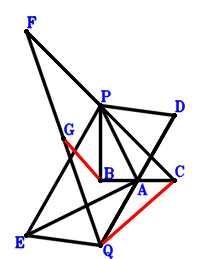
\(\because \) A is the midpoint of BC \(\therefore \small\overrightarrow{BA}=\dfrac{\small\overrightarrow{BC}}{2}\).\(\because \) A is the midpoint of QD \(\therefore \small\overrightarrow{BD}=2 \small\overrightarrow{BA} - \small\overrightarrow{BQ}=\small\overrightarrow{BC} - \small\overrightarrow{BQ}\).\(\because \) PEQD is a parallelogram \(\therefore \small\overrightarrow{BE}=- \small\overrightarrow{BD} + \small\overrightarrow{BP} + \small\overrightarrow{BQ}=- \small\overrightarrow{BC} + \small\overrightarrow{BP} + 2 \small\overrightarrow{BQ}\).\(\because \) P is the midpoint of FC \(\therefore \small\overrightarrow{BF}=- \small\overrightarrow{BC} + 2 \small\overrightarrow{BP}\).\(\because \) G is the midpoint of FQ \(\therefore \small\overrightarrow{BG}=\dfrac{\small\overrightarrow{BF}}{2} + \dfrac{\small\overrightarrow{BQ}}{2}=- \dfrac{\small\overrightarrow{BC}}{2} + \small\overrightarrow{BP} + \dfrac{\small\overrightarrow{BQ}}{2}\).\(\because \) QA=PB \(\therefore - \small\overrightarrow{BP}^{2} + \small\overrightarrow{QA}^{2}=- \small\overrightarrow{BP}^{2} + \left(\small\overrightarrow{BA} - \small\overrightarrow{BQ}\right)^{2}=- \small\overrightarrow{BP}^{2} + \left(\dfrac{\small\overrightarrow{BC}}{2} - \small\overrightarrow{BQ}\right)^{2}=\dfrac{\small\overrightarrow{BC}^{2}}{4} - \small\overrightarrow{BC} \cdot \small\overrightarrow{BQ} - \small\overrightarrow{BP}^{2} + \small\overrightarrow{BQ}^{2}=0\) . . . . . . \(①\)\(\because \) EA⊥AP \(\therefore \small\overrightarrow{EA} \cdot \small\overrightarrow{PA}=\left(\small\overrightarrow{BA} - \small\overrightarrow{BE}\right) \cdot \left(\small\overrightarrow{BA} - \small\overrightarrow{BP}\right)=\left(\dfrac{\small\overrightarrow{BC}}{2} - \small\overrightarrow{BP}\right) \cdot \left(\dfrac{3 \small\overrightarrow{BC}}{2} - \small\overrightarrow{BP} - 2 \small\overrightarrow{BQ}\right)=\dfrac{3 \small\overrightarrow{BC}^{2}}{4} - 2 \small\overrightarrow{BC} \cdot \small\overrightarrow{BP} - \small\overrightarrow{BC} \cdot \small\overrightarrow{BQ} + \small\overrightarrow{BP}^{2} + 2 \small\overrightarrow{BP} \cdot \small\overrightarrow{BQ}=0\) . . . . . . \(②\)In conclusion, \(\small\overrightarrow{BG} \cdot \small\overrightarrow{QC}=\small\overrightarrow{BG} \cdot \left(\small\overrightarrow{BC} - \small\overrightarrow{BQ}\right)=\left(\small\overrightarrow{BC} - \small\overrightarrow{BQ}\right) \cdot \left(- \dfrac{\small\overrightarrow{BC}}{2} + \small\overrightarrow{BP} + \dfrac{\small\overrightarrow{BQ}}{2}\right)=- \dfrac{\small\overrightarrow{BC}^{2}}{2} + \small\overrightarrow{BC} \cdot \small\overrightarrow{BP} + \small\overrightarrow{BC} \cdot \small\overrightarrow{BQ} - \small\overrightarrow{BP} \cdot \small\overrightarrow{BQ} - \dfrac{\small\overrightarrow{BQ}^{2}}{2}=-1/2\cdot①-1/2\cdot②=0\), that is, QC⊥GB.
Exercise 1354： Let CDBQ and DPBE be parallelograms. GPBF is a trapezoid with PB//GF and PB=2GF. C, H, B are collinear and HB=3CH. F, A are the midpoints of PQ, CB, respectively. CQ⊥PE. PA=PB. Prove that AQ⊥GH.
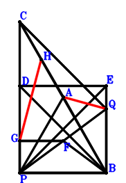
\(\because \) A is the midpoint of CB \(\therefore \small\overrightarrow{BA}=\dfrac{\small\overrightarrow{BC}}{2}\).\(\because \) CDBQ is a parallelogram \(\therefore \small\overrightarrow{BD}=\small\overrightarrow{BC} - \small\overrightarrow{BQ}\).\(\because \) DPBE is a parallelogram \(\therefore \small\overrightarrow{BE}=\small\overrightarrow{BC} - \small\overrightarrow{BP} - \small\overrightarrow{BQ}\).\(\because \) F is the midpoint of PQ \(\therefore \small\overrightarrow{BF}=\dfrac{\small\overrightarrow{BP}}{2} + \dfrac{\small\overrightarrow{BQ}}{2}\).\(\because \) PB//GF and PB=2GF \(\therefore \small\overrightarrow{BG}=\small\overrightarrow{BP} + \dfrac{\small\overrightarrow{BQ}}{2}\).\(\because \) C, H, B are collinear and HB=3CH \(\therefore \small\overrightarrow{BH}=\dfrac{3 \small\overrightarrow{BC}}{4}\).\(\because \) PA=PB \(\therefore - \small\overrightarrow{BP}^{2} + \small\overrightarrow{PA}^{2}=- \small\overrightarrow{BP}^{2} + \left(\small\overrightarrow{BA} - \small\overrightarrow{BP}\right)^{2}=- \small\overrightarrow{BP}^{2} + \left(\dfrac{\small\overrightarrow{BC}}{2} - \small\overrightarrow{BP}\right)^{2}=\dfrac{\small\overrightarrow{BC}^{2}}{4} - \small\overrightarrow{BC} \cdot \small\overrightarrow{BP}=0\) . . . . . . \(①\)\(\because \) CQ⊥PE \(\therefore \small\overrightarrow{EP} \cdot \small\overrightarrow{QC}=\left(\small\overrightarrow{BC} - \small\overrightarrow{BQ}\right) \cdot \left(- \small\overrightarrow{BE} + \small\overrightarrow{BP}\right)=\left(\small\overrightarrow{BC} - \small\overrightarrow{BQ}\right) \cdot \left(- \small\overrightarrow{BC} + 2 \small\overrightarrow{BP} + \small\overrightarrow{BQ}\right)=- \small\overrightarrow{BC}^{2} + 2 \small\overrightarrow{BC} \cdot \small\overrightarrow{BP} + 2 \small\overrightarrow{BC} \cdot \small\overrightarrow{BQ} - 2 \small\overrightarrow{BP} \cdot \small\overrightarrow{BQ} - \small\overrightarrow{BQ}^{2}=0\) . . . . . . \(②\)In conclusion, \(\small\overrightarrow{GH} \cdot \small\overrightarrow{QA}=\left(\small\overrightarrow{BA} - \small\overrightarrow{BQ}\right) \cdot \left(- \small\overrightarrow{BG} + \small\overrightarrow{BH}\right)=\left(\dfrac{\small\overrightarrow{BC}}{2} - \small\overrightarrow{BQ}\right) \cdot \left(\dfrac{3 \small\overrightarrow{BC}}{4} - \small\overrightarrow{BP} - \dfrac{\small\overrightarrow{BQ}}{2}\right)=\dfrac{3 \small\overrightarrow{BC}^{2}}{8} - \dfrac{\small\overrightarrow{BC} \cdot \small\overrightarrow{BP}}{2} - \small\overrightarrow{BC} \cdot \small\overrightarrow{BQ} + \small\overrightarrow{BP} \cdot \small\overrightarrow{BQ} + \dfrac{\small\overrightarrow{BQ}^{2}}{2}=-1/2\cdot①-1/2\cdot②=0\), that is, AQ⊥GH.
Exercise 1490： Let QAFB be a parallelogram. CPBD is a trapezoid with CP//DB and CP=2DB. A, D, P are the midpoints of CB, QE, GF, respectively. CQ⊥PE. PA=PB. Prove that AQ⊥GC.
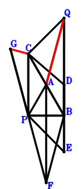
\(\because \) A is the midpoint of CB \(\therefore \small\overrightarrow{BA}=\dfrac{\small\overrightarrow{BC}}{2}\).\(\because \) CP//DB and CP=2DB \(\therefore \small\overrightarrow{BD}=\dfrac{\small\overrightarrow{BC}}{2} - \dfrac{\small\overrightarrow{BP}}{2}\).\(\because \) D is the midpoint of QE \(\therefore \small\overrightarrow{BE}=2 \small\overrightarrow{BD} - \small\overrightarrow{BQ}=\small\overrightarrow{BC} - \small\overrightarrow{BP} - \small\overrightarrow{BQ}\).\(\because \) A is the midpoint of CB \(\therefore \small\overrightarrow{BF}=\dfrac{\small\overrightarrow{BC}}{2} - \small\overrightarrow{BQ}\).\(\because \) QAFB is a parallelogram \(\therefore \small\overrightarrow{BG}=- \small\overrightarrow{BF} + 2 \small\overrightarrow{BP}=- \dfrac{\small\overrightarrow{BC}}{2} + 2 \small\overrightarrow{BP} + \small\overrightarrow{BQ}\).\(\because \) P is the midpoint of GF \(\therefore - \small\overrightarrow{BP}^{2} + \small\overrightarrow{PA}^{2}=- \small\overrightarrow{BP}^{2} + \left(\small\overrightarrow{BA} - \small\overrightarrow{BP}\right)^{2}=- \small\overrightarrow{BP}^{2} + \left(\dfrac{\small\overrightarrow{BC}}{2} - \small\overrightarrow{BP}\right)^{2}=\dfrac{\small\overrightarrow{BC}^{2}}{4} - \small\overrightarrow{BC} \cdot \small\overrightarrow{BP}=0\) . . . . . . \(①\)\(\because \) PA=PB \(\therefore \small\overrightarrow{EP} \cdot \small\overrightarrow{QC}=\left(\small\overrightarrow{BC} - \small\overrightarrow{BQ}\right) \cdot \left(- \small\overrightarrow{BE} + \small\overrightarrow{BP}\right)=\left(\small\overrightarrow{BC} - \small\overrightarrow{BQ}\right) \cdot \left(- \small\overrightarrow{BC} + 2 \small\overrightarrow{BP} + \small\overrightarrow{BQ}\right)=- \small\overrightarrow{BC}^{2} + 2 \small\overrightarrow{BC} \cdot \small\overrightarrow{BP} + 2 \small\overrightarrow{BC} \cdot \small\overrightarrow{BQ} - 2 \small\overrightarrow{BP} \cdot \small\overrightarrow{BQ} - \small\overrightarrow{BQ}^{2}=0\) . . . . . . \(②\)In conclusion, \(\small\overrightarrow{GC} \cdot \small\overrightarrow{QA}=\left(\small\overrightarrow{BA} - \small\overrightarrow{BQ}\right) \cdot \left(\small\overrightarrow{BC} - \small\overrightarrow{BG}\right)=\left(\dfrac{\small\overrightarrow{BC}}{2} - \small\overrightarrow{BQ}\right) \cdot \left(\dfrac{3 \small\overrightarrow{BC}}{2} - 2 \small\overrightarrow{BP} - \small\overrightarrow{BQ}\right)=\dfrac{3 \small\overrightarrow{BC}^{2}}{4} - \small\overrightarrow{BC} \cdot \small\overrightarrow{BP} - 2 \small\overrightarrow{BC} \cdot \small\overrightarrow{BQ} + 2 \small\overrightarrow{BP} \cdot \small\overrightarrow{BQ} + \small\overrightarrow{BQ}^{2}=-①-②=0\), that is, AQ⊥GC.
Exercise 2905： Let PAGC and BQCD be parallelograms. A, Q are the midpoints of BC, HG, respectively. E is the midpoint of QF and DC. BP⊥PF. QA=QC. Prove that AP⊥HB.
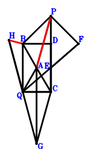
\(\because \) A is the midpoint of BC \(\therefore \small\overrightarrow{CA}=\dfrac{\small\overrightarrow{CB}}{2}\).\(\because \) BQCD is a parallelogram \(\therefore \small\overrightarrow{CD}=\small\overrightarrow{CB} - \small\overrightarrow{CQ}\).\(\because \) E is the midpoint of DC \(\therefore \small\overrightarrow{CE}=\dfrac{\small\overrightarrow{CD}}{2}=\dfrac{\small\overrightarrow{CB}}{2} - \dfrac{\small\overrightarrow{CQ}}{2}\).\(\because \) E is the midpoint of QF \(\therefore \small\overrightarrow{CF}=2 \small\overrightarrow{CE} - \small\overrightarrow{CQ}=\small\overrightarrow{CB} - 2 \small\overrightarrow{CQ}\).\(\because \) PAGC is a parallelogram \(\therefore \small\overrightarrow{CG}=\dfrac{\small\overrightarrow{CB}}{2} - \small\overrightarrow{CP}\).\(\because \) Q is the midpoint of HG \(\therefore \small\overrightarrow{CH}=- \small\overrightarrow{CG} + 2 \small\overrightarrow{CQ}=- \dfrac{\small\overrightarrow{CB}}{2} + \small\overrightarrow{CP} + 2 \small\overrightarrow{CQ}\).\(\because \) QA=QC \(\therefore \small\overrightarrow{QA}^{2} - \small\overrightarrow{QC}^{2}=- \small\overrightarrow{CQ}^{2} + \left(\small\overrightarrow{CA} - \small\overrightarrow{CQ}\right)^{2}=- \small\overrightarrow{CQ}^{2} + \left(\dfrac{\small\overrightarrow{CB}}{2} - \small\overrightarrow{CQ}\right)^{2}=\dfrac{\small\overrightarrow{CB}^{2}}{4} - \small\overrightarrow{CB} \cdot \small\overrightarrow{CQ}=0\) . . . . . . \(①\)\(\because \) BP⊥PF \(\therefore \small\overrightarrow{BP} \cdot \small\overrightarrow{PF}=\left(- \small\overrightarrow{CB} + \small\overrightarrow{CP}\right) \cdot \left(\small\overrightarrow{CF} - \small\overrightarrow{CP}\right)=\left(- \small\overrightarrow{CB} + \small\overrightarrow{CP}\right) \cdot \left(\small\overrightarrow{CB} - \small\overrightarrow{CP} - 2 \small\overrightarrow{CQ}\right)=- \small\overrightarrow{CB}^{2} + 2 \small\overrightarrow{CB} \cdot \small\overrightarrow{CP} + 2 \small\overrightarrow{CB} \cdot \small\overrightarrow{CQ} - \small\overrightarrow{CP}^{2} - 2 \small\overrightarrow{CP} \cdot \small\overrightarrow{CQ}=0\) . . . . . . \(②\)In conclusion, \(\small\overrightarrow{HB} \cdot \small\overrightarrow{PA}=\left(\small\overrightarrow{CA} - \small\overrightarrow{CP}\right) \cdot \left(\small\overrightarrow{CB} - \small\overrightarrow{CH}\right)=\left(\dfrac{\small\overrightarrow{CB}}{2} - \small\overrightarrow{CP}\right) \cdot \left(\dfrac{3 \small\overrightarrow{CB}}{2} - \small\overrightarrow{CP} - 2 \small\overrightarrow{CQ}\right)=\dfrac{3 \small\overrightarrow{CB}^{2}}{4} - 2 \small\overrightarrow{CB} \cdot \small\overrightarrow{CP} - \small\overrightarrow{CB} \cdot \small\overrightarrow{CQ} + \small\overrightarrow{CP}^{2} + 2 \small\overrightarrow{CP} \cdot \small\overrightarrow{CQ}=-①-②=0\), that is, AP⊥HB.
Exercise 2948： Let EDCP and PFQA be parallelograms. A, Q are the midpoints of BC, DC, respectively. G is the midpoint of QF and BH. EB⊥BP. QA=QC. Prove that AP⊥HC.
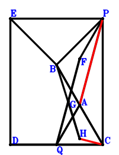
\(\because \) A is the midpoint of BC \(\therefore \small\overrightarrow{CA}=\dfrac{\small\overrightarrow{CB}}{2}\).\(\because \) Q is the midpoint of DC \(\therefore \small\overrightarrow{CD}=2 \small\overrightarrow{CQ}\).\(\because \) EDCP is a parallelogram \(\therefore \small\overrightarrow{CE}=\small\overrightarrow{CP} + 2 \small\overrightarrow{CQ}\).\(\because \) A is the midpoint of BC \(\therefore \small\overrightarrow{CF}=- \small\overrightarrow{CA} + \small\overrightarrow{CP} + \small\overrightarrow{CQ}=- \dfrac{\small\overrightarrow{CB}}{2} + \small\overrightarrow{CP} + \small\overrightarrow{CQ}\).\(\because \) PFQA is a parallelogram \(\therefore \small\overrightarrow{CG}=\dfrac{\small\overrightarrow{CF}}{2} + \dfrac{\small\overrightarrow{CQ}}{2}=- \dfrac{\small\overrightarrow{CB}}{4} + \dfrac{\small\overrightarrow{CP}}{2} + \small\overrightarrow{CQ}\).\(\because \) G is the midpoint of QF \(\therefore \small\overrightarrow{CH}=- \small\overrightarrow{CB} + 2 \small\overrightarrow{CG}=- \dfrac{3 \small\overrightarrow{CB}}{2} + \small\overrightarrow{CP} + 2 \small\overrightarrow{CQ}\).\(\because \) G is the midpoint of BH \(\therefore \small\overrightarrow{QA}^{2} - \small\overrightarrow{QC}^{2}=- \small\overrightarrow{CQ}^{2} + \left(\small\overrightarrow{CA} - \small\overrightarrow{CQ}\right)^{2}=- \small\overrightarrow{CQ}^{2} + \left(\dfrac{\small\overrightarrow{CB}}{2} - \small\overrightarrow{CQ}\right)^{2}=\dfrac{\small\overrightarrow{CB}^{2}}{4} - \small\overrightarrow{CB} \cdot \small\overrightarrow{CQ}=0\) . . . . . . \(①\)\(\because \) QA=QC \(\therefore \small\overrightarrow{BP} \cdot \small\overrightarrow{EB}=\left(- \small\overrightarrow{CB} + \small\overrightarrow{CP}\right) \cdot \left(\small\overrightarrow{CB} - \small\overrightarrow{CE}\right)=\left(- \small\overrightarrow{CB} + \small\overrightarrow{CP}\right) \cdot \left(\small\overrightarrow{CB} - \small\overrightarrow{CP} - 2 \small\overrightarrow{CQ}\right)=- \small\overrightarrow{CB}^{2} + 2 \small\overrightarrow{CB} \cdot \small\overrightarrow{CP} + 2 \small\overrightarrow{CB} \cdot \small\overrightarrow{CQ} - \small\overrightarrow{CP}^{2} - 2 \small\overrightarrow{CP} \cdot \small\overrightarrow{CQ}=0\) . . . . . . \(②\)In conclusion, \(\small\overrightarrow{HC} \cdot \small\overrightarrow{PA}=- \small\overrightarrow{CH} \cdot \left(\small\overrightarrow{CA} - \small\overrightarrow{CP}\right)=- \left(\dfrac{\small\overrightarrow{CB}}{2} - \small\overrightarrow{CP}\right) \cdot \left(- \dfrac{3 \small\overrightarrow{CB}}{2} + \small\overrightarrow{CP} + 2 \small\overrightarrow{CQ}\right)=\dfrac{3 \small\overrightarrow{CB}^{2}}{4} - 2 \small\overrightarrow{CB} \cdot \small\overrightarrow{CP} - \small\overrightarrow{CB} \cdot \small\overrightarrow{CQ} + \small\overrightarrow{CP}^{2} + 2 \small\overrightarrow{CP} \cdot \small\overrightarrow{CQ}=-①-②=0\), that is, AP⊥HC.
Exercise 3448： Let PCFB and PDQE be parallelograms. Q is the midpoint of EF. A is the midpoint of CB and DQ. PA⊥AE. AQ=CQ. Prove that CE⊥PB.
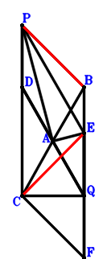
\(\because \) A is the midpoint of CB \(\therefore \small\overrightarrow{CA}=\dfrac{\small\overrightarrow{CB}}{2}\).\(\because \) A is the midpoint of DQ \(\therefore \small\overrightarrow{CD}=2 \small\overrightarrow{CA} - \small\overrightarrow{CQ}=\small\overrightarrow{CB} - \small\overrightarrow{CQ}\).\(\because \) PDQE is a parallelogram \(\therefore \small\overrightarrow{CE}=- \small\overrightarrow{CD} + \small\overrightarrow{CP} + \small\overrightarrow{CQ}=- \small\overrightarrow{CB} + \small\overrightarrow{CP} + 2 \small\overrightarrow{CQ}\).\(\because \) PCFB is a parallelogram \(\therefore \small\overrightarrow{CF}=\small\overrightarrow{CB} - \small\overrightarrow{CP}\).\(\because \) Q is the midpoint of EF \(\therefore \small\overrightarrow{QA}^{2} - \small\overrightarrow{QC}^{2}=- \small\overrightarrow{CQ}^{2} + \left(\small\overrightarrow{CA} - \small\overrightarrow{CQ}\right)^{2}=- \small\overrightarrow{CQ}^{2} + \left(\dfrac{\small\overrightarrow{CB}}{2} - \small\overrightarrow{CQ}\right)^{2}=\dfrac{\small\overrightarrow{CB}^{2}}{4} - \small\overrightarrow{CB} \cdot \small\overrightarrow{CQ}=0\) . . . . . . \(①\)\(\because \) AQ=CQ \(\therefore \small\overrightarrow{EA} \cdot \small\overrightarrow{PA}=\left(\small\overrightarrow{CA} - \small\overrightarrow{CE}\right) \cdot \left(\small\overrightarrow{CA} - \small\overrightarrow{CP}\right)=\left(\dfrac{\small\overrightarrow{CB}}{2} - \small\overrightarrow{CP}\right) \cdot \left(\dfrac{3 \small\overrightarrow{CB}}{2} - \small\overrightarrow{CP} - 2 \small\overrightarrow{CQ}\right)=\dfrac{3 \small\overrightarrow{CB}^{2}}{4} - 2 \small\overrightarrow{CB} \cdot \small\overrightarrow{CP} - \small\overrightarrow{CB} \cdot \small\overrightarrow{CQ} + \small\overrightarrow{CP}^{2} + 2 \small\overrightarrow{CP} \cdot \small\overrightarrow{CQ}=0\) . . . . . . \(②\)In conclusion, \(\small\overrightarrow{BP} \cdot \small\overrightarrow{EC}=- \small\overrightarrow{CE} \cdot \left(- \small\overrightarrow{CB} + \small\overrightarrow{CP}\right)=- \left(- \small\overrightarrow{CB} + \small\overrightarrow{CP}\right) \cdot \left(- \small\overrightarrow{CB} + \small\overrightarrow{CP} + 2 \small\overrightarrow{CQ}\right)=- \small\overrightarrow{CB}^{2} + 2 \small\overrightarrow{CB} \cdot \small\overrightarrow{CP} + 2 \small\overrightarrow{CB} \cdot \small\overrightarrow{CQ} - \small\overrightarrow{CP}^{2} - 2 \small\overrightarrow{CP} \cdot \small\overrightarrow{CQ}=-①-②=0\), that is, CE⊥PB.
Exercise 4011： Let QFPE be a parallelogram. CPBD is a trapezoid with CD//PB and CD=2PB. A, E are the midpoints of CB, BD, respectively. PB⊥QC and QA⊥FC. Prove that \(PA^{2}=PB^{2} + QC^{2}\).
Exercise 4132： Let QCGH be a parallelogram. CPDE is a trapezoid with CP//ED and CP=2ED. C, D, B are collinear and CD=3DB. E, A, P are the midpoints of FQ, CB, GB, respectively. PF⊥AQ. PA=PB. Prove that HB⊥CQ.
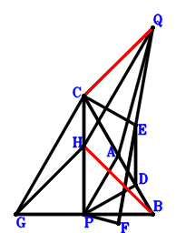
\(\because \) A is the midpoint of CB \(\therefore \small\overrightarrow{BA}=\dfrac{\small\overrightarrow{BC}}{2}\).\(\because \) C, D, B are collinear and CD=3DB \(\therefore \small\overrightarrow{BD}=\dfrac{\small\overrightarrow{BC}}{4}\).\(\because \) CP//ED and CP=2ED \(\therefore \small\overrightarrow{BE}=\dfrac{3 \small\overrightarrow{BC}}{4} - \dfrac{\small\overrightarrow{BP}}{2}\).\(\because \) E is the midpoint of FQ \(\therefore \small\overrightarrow{BF}=2 \small\overrightarrow{BE} - \small\overrightarrow{BQ}=\dfrac{3 \small\overrightarrow{BC}}{2} - \small\overrightarrow{BP} - \small\overrightarrow{BQ}\).\(\because \) P is the midpoint of GB \(\therefore \small\overrightarrow{BG}=2 \small\overrightarrow{BP}\).\(\because \) QCGH is a parallelogram \(\therefore \small\overrightarrow{BH}=- \small\overrightarrow{BC} + 2 \small\overrightarrow{BP} + \small\overrightarrow{BQ}\).\(\because \) PA=PB \(\therefore - \small\overrightarrow{BP}^{2} + \small\overrightarrow{PA}^{2}=- \small\overrightarrow{BP}^{2} + \left(\small\overrightarrow{BA} - \small\overrightarrow{BP}\right)^{2}=- \small\overrightarrow{BP}^{2} + \left(\dfrac{\small\overrightarrow{BC}}{2} - \small\overrightarrow{BP}\right)^{2}=\dfrac{\small\overrightarrow{BC}^{2}}{4} - \small\overrightarrow{BC} \cdot \small\overrightarrow{BP}=0\) . . . . . . \(①\)\(\because \) PF⊥AQ \(\therefore \small\overrightarrow{PF} \cdot \small\overrightarrow{QA}=\left(\small\overrightarrow{BA} - \small\overrightarrow{BQ}\right) \cdot \left(\small\overrightarrow{BF} - \small\overrightarrow{BP}\right)=\left(\dfrac{\small\overrightarrow{BC}}{2} - \small\overrightarrow{BQ}\right) \cdot \left(\dfrac{3 \small\overrightarrow{BC}}{2} - 2 \small\overrightarrow{BP} - \small\overrightarrow{BQ}\right)=\dfrac{3 \small\overrightarrow{BC}^{2}}{4} - \small\overrightarrow{BC} \cdot \small\overrightarrow{BP} - 2 \small\overrightarrow{BC} \cdot \small\overrightarrow{BQ} + 2 \small\overrightarrow{BP} \cdot \small\overrightarrow{BQ} + \small\overrightarrow{BQ}^{2}=0\) . . . . . . \(②\)In conclusion, \(\small\overrightarrow{BH} \cdot \small\overrightarrow{QC}=\small\overrightarrow{BH} \cdot \left(\small\overrightarrow{BC} - \small\overrightarrow{BQ}\right)=\left(\small\overrightarrow{BC} - \small\overrightarrow{BQ}\right) \cdot \left(- \small\overrightarrow{BC} + 2 \small\overrightarrow{BP} + \small\overrightarrow{BQ}\right)=- \small\overrightarrow{BC}^{2} + 2 \small\overrightarrow{BC} \cdot \small\overrightarrow{BP} + 2 \small\overrightarrow{BC} \cdot \small\overrightarrow{BQ} - 2 \small\overrightarrow{BP} \cdot \small\overrightarrow{BQ} - \small\overrightarrow{BQ}^{2}=-①-②=0\), that is, HB⊥CQ.
Exercise 4590： Let IHQA be a parallelogram. F is the midpoint of GC and EQ. A is the midpoint of HP and BC. D is the midpoint of EC and QP. GB⊥BP. QA=QC. Prove that QI⊥AP.
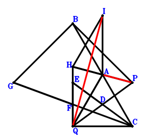
\(\because \) A is the midpoint of BC \(\therefore \small\overrightarrow{CA}=\dfrac{\small\overrightarrow{CB}}{2}\).\(\because \) D is the midpoint of QP \(\therefore \small\overrightarrow{CD}=\dfrac{\small\overrightarrow{CP}}{2} + \dfrac{\small\overrightarrow{CQ}}{2}\).\(\because \) D is the midpoint of EC \(\therefore \small\overrightarrow{CE}=2 \small\overrightarrow{CD}=\small\overrightarrow{CP} + \small\overrightarrow{CQ}\).\(\because \) F is the midpoint of EQ \(\therefore \small\overrightarrow{CF}=\dfrac{\small\overrightarrow{CE}}{2} + \dfrac{\small\overrightarrow{CQ}}{2}=\dfrac{\small\overrightarrow{CP}}{2} + \small\overrightarrow{CQ}\).\(\because \) F is the midpoint of GC \(\therefore \small\overrightarrow{CG}=2 \small\overrightarrow{CF}=\small\overrightarrow{CP} + 2 \small\overrightarrow{CQ}\).\(\because \) A is the midpoint of HP \(\therefore \small\overrightarrow{CH}=2 \small\overrightarrow{CA} - \small\overrightarrow{CP}=\small\overrightarrow{CB} - \small\overrightarrow{CP}\).\(\because \) IHQA is a parallelogram \(\therefore \small\overrightarrow{CI}=\dfrac{3 \small\overrightarrow{CB}}{2} - \small\overrightarrow{CP} - \small\overrightarrow{CQ}\).\(\because \) QA=QC \(\therefore \small\overrightarrow{QA}^{2} - \small\overrightarrow{QC}^{2}=- \small\overrightarrow{CQ}^{2} + \left(\small\overrightarrow{CA} - \small\overrightarrow{CQ}\right)^{2}=- \small\overrightarrow{CQ}^{2} + \left(\dfrac{\small\overrightarrow{CB}}{2} - \small\overrightarrow{CQ}\right)^{2}=\dfrac{\small\overrightarrow{CB}^{2}}{4} - \small\overrightarrow{CB} \cdot \small\overrightarrow{CQ}=0\) . . . . . . \(①\)\(\because \) GB⊥BP \(\therefore \small\overrightarrow{BP} \cdot \small\overrightarrow{GB}=\left(- \small\overrightarrow{CB} + \small\overrightarrow{CP}\right) \cdot \left(\small\overrightarrow{CB} - \small\overrightarrow{CG}\right)=\left(- \small\overrightarrow{CB} + \small\overrightarrow{CP}\right) \cdot \left(\small\overrightarrow{CB} - \small\overrightarrow{CP} - 2 \small\overrightarrow{CQ}\right)=- \small\overrightarrow{CB}^{2} + 2 \small\overrightarrow{CB} \cdot \small\overrightarrow{CP} + 2 \small\overrightarrow{CB} \cdot \small\overrightarrow{CQ} - \small\overrightarrow{CP}^{2} - 2 \small\overrightarrow{CP} \cdot \small\overrightarrow{CQ}=0\) . . . . . . \(②\)In conclusion, \(\small\overrightarrow{PA} \cdot \small\overrightarrow{QI}=\left(\small\overrightarrow{CA} - \small\overrightarrow{CP}\right) \cdot \left(\small\overrightarrow{CI} - \small\overrightarrow{CQ}\right)=\left(\dfrac{\small\overrightarrow{CB}}{2} - \small\overrightarrow{CP}\right) \cdot \left(\dfrac{3 \small\overrightarrow{CB}}{2} - \small\overrightarrow{CP} - 2 \small\overrightarrow{CQ}\right)=\dfrac{3 \small\overrightarrow{CB}^{2}}{4} - 2 \small\overrightarrow{CB} \cdot \small\overrightarrow{CP} - \small\overrightarrow{CB} \cdot \small\overrightarrow{CQ} + \small\overrightarrow{CP}^{2} + 2 \small\overrightarrow{CP} \cdot \small\overrightarrow{CQ}=-①-②=0\), that is, QI⊥AP.
Exercise 6536： Let EQCF be a parallelogram. FBAI is a cyclic quadrilateral, AF intersects BI at P. B, D, C are collinear and DC=3BD. A, C, D are the midpoints of BC, QG, QE, respectively. H is the midpoint of QI and BG. Prove that QA=QC.
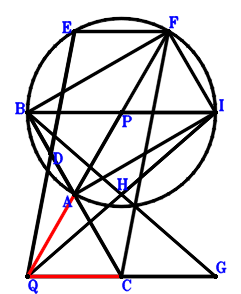
\(\because \) A is the midpoint of BC \(\therefore \small\overrightarrow{CA}=\dfrac{\small\overrightarrow{CB}}{2}\).\(\because \) B, D, C are collinear and DC=3BD \(\therefore \small\overrightarrow{CD}=\dfrac{3 \small\overrightarrow{CB}}{4}\).\(\because \) D is the midpoint of QE \(\therefore \small\overrightarrow{CE}=2 \small\overrightarrow{CD} - \small\overrightarrow{CQ}=\dfrac{3 \small\overrightarrow{CB}}{2} - \small\overrightarrow{CQ}\).\(\because \) EQCF is a parallelogram \(\therefore \small\overrightarrow{CF}=\dfrac{3 \small\overrightarrow{CB}}{2} - 2 \small\overrightarrow{CQ}\).\(\because \) C is the midpoint of QG \(\therefore \small\overrightarrow{CG}=- \small\overrightarrow{CQ}\).\(\because \) H is the midpoint of BG \(\therefore \small\overrightarrow{CH}=\dfrac{\small\overrightarrow{CB}}{2} + \dfrac{\small\overrightarrow{CG}}{2}=\dfrac{\small\overrightarrow{CB}}{2} - \dfrac{\small\overrightarrow{CQ}}{2}\).\(\because \) H is the midpoint of QI \(\therefore \small\overrightarrow{CI}=2 \small\overrightarrow{CH} - \small\overrightarrow{CQ}=\small\overrightarrow{CB} - 2 \small\overrightarrow{CQ}\).\(\because \) FBAI is a cyclic quadrilateral, AF intersects BI at P \( \therefore\small\overrightarrow{BP} \cdot \pi + \small\overrightarrow{PA} \cdot \small\overrightarrow{PF}=\left(\small\overrightarrow{CA} - \small\overrightarrow{CP}\right) \cdot \left(\small\overrightarrow{CF} - \small\overrightarrow{CP}\right) + \left(- \small\overrightarrow{CB} + \small\overrightarrow{CP}\right) \cdot \left(\small\overrightarrow{CI} - \small\overrightarrow{CP}\right)=\left(- \small\overrightarrow{CB} + \small\overrightarrow{CP}\right) \cdot \left(\small\overrightarrow{CB} - \small\overrightarrow{CP} - 2 \small\overrightarrow{CQ}\right) + \left(\dfrac{\small\overrightarrow{CB}}{2} - \small\overrightarrow{CP}\right) \cdot \left(\dfrac{3 \small\overrightarrow{CB}}{2} - \small\overrightarrow{CP} - 2 \small\overrightarrow{CQ}\right)=- \dfrac{\small\overrightarrow{CB}^{2}}{4} + \small\overrightarrow{CB} \cdot \small\overrightarrow{CQ}=0.\)In conclusion, \(\small\overrightarrow{QA}^{2} - \small\overrightarrow{QC}^{2}=- \small\overrightarrow{CQ}^{2} + \left(\small\overrightarrow{CA} - \small\overrightarrow{CQ}\right)^{2}=- \small\overrightarrow{CQ}^{2} + \left(\dfrac{\small\overrightarrow{CB}}{2} - \small\overrightarrow{CQ}\right)^{2}=\dfrac{\small\overrightarrow{CB}^{2}}{4} - \small\overrightarrow{CB} \cdot \small\overrightarrow{CQ}=0\), that is, QA=QC.
Exercise 6613： Let EBPD be a trapezoid with EB//DP and EB=2DP. F is the midpoint of EC. A is the midpoint of CB and DP. FQ⊥QA. AP=PB. Given that PB//CQ, prove that \(CQ^{2}=2 CQ \cdot PB\).
Exercise 6869： Let DPEQ be a parallelogram. QCFB is a trapezoid with QB//CF and QB=2CF. F is the midpoint of GP. A is the midpoint of CB and DP. QA⊥AE. AP=CQ. Prove that GQ⊥BP.
Exercise 6946： Let EADB be a parallelogram. Q, F, P are collinear and FP=2QF. C, F, G are collinear and 2CG=3FG. A, Q are the midpoints of CB, CD, respectively. QA=CQ. Given that A, P, E are collinear and P, B, G are collinear, prove that PE\(\cdot\)AP=BG\(\cdot\)PB.
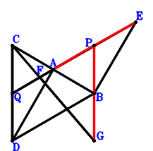
\(\because \) A is the midpoint of CB \(\therefore \small\overrightarrow{BA}=\dfrac{\small\overrightarrow{BC}}{2}\).\(\because \) Q is the midpoint of CD \(\therefore \small\overrightarrow{BD}=- \small\overrightarrow{BC} + 2 \small\overrightarrow{BQ}\).\(\because \) EADB is a parallelogram \(\therefore \small\overrightarrow{BE}=\dfrac{\small\overrightarrow{BC}}{2} - \small\overrightarrow{BD}=\dfrac{3 \small\overrightarrow{BC}}{2} - 2 \small\overrightarrow{BQ}\).\(\because \) Q, F, P are collinear and FP=2QF \(\therefore \small\overrightarrow{BF}=\dfrac{\small\overrightarrow{BP}}{3} + \dfrac{2 \small\overrightarrow{BQ}}{3}\).\(\because \) C, F, G are collinear and 2CG=3FG \(\therefore \small\overrightarrow{BG}=- 2 \small\overrightarrow{BC} + 3 \small\overrightarrow{BF}=- 2 \small\overrightarrow{BC} + \small\overrightarrow{BP} + 2 \small\overrightarrow{BQ}\).\(\because \) QA=CQ \( \therefore\small\overrightarrow{QA}^{2} - \small\overrightarrow{QC}^{2}=\left(\small\overrightarrow{BA} - \small\overrightarrow{BQ}\right)^{2} - \left(\small\overrightarrow{BC} - \small\overrightarrow{BQ}\right)^{2}=\left(\dfrac{\small\overrightarrow{BC}}{2} - \small\overrightarrow{BQ}\right)^{2} - \left(\small\overrightarrow{BC} - \small\overrightarrow{BQ}\right)^{2}=- \dfrac{3 \small\overrightarrow{BC}^{2}}{4} + \small\overrightarrow{BC} \cdot \small\overrightarrow{BQ}=0.\)In conclusion, \(\small\overrightarrow{BP} \cdot \small\overrightarrow{GB} + \small\overrightarrow{PA} \cdot \small\overrightarrow{PE}=- \small\overrightarrow{BG} \cdot \small\overrightarrow{BP} + \left(\small\overrightarrow{BA} - \small\overrightarrow{BP}\right) \cdot \left(\small\overrightarrow{BE} - \small\overrightarrow{BP}\right)=- \small\overrightarrow{BP} \cdot \left(- 2 \small\overrightarrow{BC} + \small\overrightarrow{BP} + 2 \small\overrightarrow{BQ}\right) + \left(\dfrac{\small\overrightarrow{BC}}{2} - \small\overrightarrow{BP}\right) \cdot \left(\dfrac{3 \small\overrightarrow{BC}}{2} - \small\overrightarrow{BP} - 2 \small\overrightarrow{BQ}\right)=\dfrac{3 \small\overrightarrow{BC}^{2}}{4} - \small\overrightarrow{BC} \cdot \small\overrightarrow{BQ}=0\)\(\because\) A, P, E are collinear and P, B, G are collinear \(\therefore\) PE\(\cdot\)AP=BG\(\cdot\)PB.
Exercise 7300： Let BQCD be a trapezoid with BD//QC and BD=2QC. A, H, C are collinear and HC=2AH. Q, H, D are collinear and 2QD=3HD. A, E are the midpoints of BC, CD, respectively. F is the midpoint of QG and BE. AP⊥PG. QA=QC. Prove that BP⊥PD.
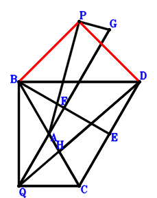
\(\because \) A is the midpoint of BC \(\therefore \small\overrightarrow{CA}=\dfrac{\small\overrightarrow{CB}}{2}\).\(\because \) BD//QC and BD=2QC \(\therefore \small\overrightarrow{CD}=\small\overrightarrow{CB} - 2 \small\overrightarrow{CQ}\).\(\because \) E is the midpoint of CD \(\therefore \small\overrightarrow{CE}=\dfrac{\small\overrightarrow{CD}}{2}=\dfrac{\small\overrightarrow{CB}}{2} - \small\overrightarrow{CQ}\).\(\because \) F is the midpoint of BE \(\therefore \small\overrightarrow{CF}=\dfrac{\small\overrightarrow{CB}}{2} + \dfrac{\small\overrightarrow{CE}}{2}=\dfrac{3 \small\overrightarrow{CB}}{4} - \dfrac{\small\overrightarrow{CQ}}{2}\).\(\because \) F is the midpoint of QG \(\therefore \small\overrightarrow{CG}=2 \small\overrightarrow{CF} - \small\overrightarrow{CQ}=\dfrac{3 \small\overrightarrow{CB}}{2} - 2 \small\overrightarrow{CQ}\).\(\because \) A, H, C are collinear and HC=2AH \(\therefore \small\overrightarrow{CH}=\dfrac{2 \small\overrightarrow{CA}}{3}=\dfrac{\small\overrightarrow{CB}}{3}\).\(\because \) Q, H, D are collinear and 2QD=3HD \(\therefore \small\overrightarrow{QA}^{2} - \small\overrightarrow{QC}^{2}=- \small\overrightarrow{CQ}^{2} + \left(\small\overrightarrow{CA} - \small\overrightarrow{CQ}\right)^{2}=- \small\overrightarrow{CQ}^{2} + \left(\dfrac{\small\overrightarrow{CB}}{2} - \small\overrightarrow{CQ}\right)^{2}=\dfrac{\small\overrightarrow{CB}^{2}}{4} - \small\overrightarrow{CB} \cdot \small\overrightarrow{CQ}=0\) . . . . . . \(①\)\(\because \) QA=QC \(\therefore \small\overrightarrow{PA} \cdot \small\overrightarrow{PG}=\left(\small\overrightarrow{CA} - \small\overrightarrow{CP}\right) \cdot \left(\small\overrightarrow{CG} - \small\overrightarrow{CP}\right)=\left(\dfrac{\small\overrightarrow{CB}}{2} - \small\overrightarrow{CP}\right) \cdot \left(\dfrac{3 \small\overrightarrow{CB}}{2} - \small\overrightarrow{CP} - 2 \small\overrightarrow{CQ}\right)=\dfrac{3 \small\overrightarrow{CB}^{2}}{4} - 2 \small\overrightarrow{CB} \cdot \small\overrightarrow{CP} - \small\overrightarrow{CB} \cdot \small\overrightarrow{CQ} + \small\overrightarrow{CP}^{2} + 2 \small\overrightarrow{CP} \cdot \small\overrightarrow{CQ}=0\) . . . . . . \(②\)In conclusion, \(\small\overrightarrow{BP} \cdot \small\overrightarrow{PD}=\left(- \small\overrightarrow{CB} + \small\overrightarrow{CP}\right) \cdot \left(\small\overrightarrow{CD} - \small\overrightarrow{CP}\right)=\left(- \small\overrightarrow{CB} + \small\overrightarrow{CP}\right) \cdot \left(\small\overrightarrow{CB} - \small\overrightarrow{CP} - 2 \small\overrightarrow{CQ}\right)=- \small\overrightarrow{CB}^{2} + 2 \small\overrightarrow{CB} \cdot \small\overrightarrow{CP} + 2 \small\overrightarrow{CB} \cdot \small\overrightarrow{CQ} - \small\overrightarrow{CP}^{2} - 2 \small\overrightarrow{CP} \cdot \small\overrightarrow{CQ}=-①-②=0\), that is, BP⊥PD.
Exercise 8062： Let FCPA be a parallelogram. C, D, E are collinear and CE=3DE. P, D, Q are collinear and DQ=2PD. A is the midpoint of CB. G is the midpoint of FB and HQ. CQ⊥EB. PA=PB. Prove that PH⊥AQ.
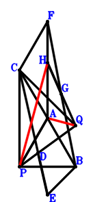
\(\because \) A is the midpoint of CB \(\therefore \small\overrightarrow{BA}=\dfrac{\small\overrightarrow{BC}}{2}\).\(\because \) P, D, Q are collinear and DQ=2PD \(\therefore \small\overrightarrow{BD}=\dfrac{2 \small\overrightarrow{BP}}{3} + \dfrac{\small\overrightarrow{BQ}}{3}\).\(\because \) C, D, E are collinear and CE=3DE \(\therefore \small\overrightarrow{BE}=- \dfrac{\small\overrightarrow{BC}}{2} + \dfrac{3 \small\overrightarrow{BD}}{2}=- \dfrac{\small\overrightarrow{BC}}{2} + \small\overrightarrow{BP} + \dfrac{\small\overrightarrow{BQ}}{2}\).\(\because \) FCPA is a parallelogram \(\therefore \small\overrightarrow{BF}=\dfrac{3 \small\overrightarrow{BC}}{2} - \small\overrightarrow{BP}\).\(\because \) G is the midpoint of FB \(\therefore \small\overrightarrow{BG}=\dfrac{\small\overrightarrow{BF}}{2}=\dfrac{3 \small\overrightarrow{BC}}{4} - \dfrac{\small\overrightarrow{BP}}{2}\).\(\because \) G is the midpoint of HQ \(\therefore \small\overrightarrow{BH}=2 \small\overrightarrow{BG} - \small\overrightarrow{BQ}=\dfrac{3 \small\overrightarrow{BC}}{2} - \small\overrightarrow{BP} - \small\overrightarrow{BQ}\).\(\because \) PA=PB \(\therefore - \small\overrightarrow{BP}^{2} + \small\overrightarrow{PA}^{2}=- \small\overrightarrow{BP}^{2} + \left(\small\overrightarrow{BA} - \small\overrightarrow{BP}\right)^{2}=- \small\overrightarrow{BP}^{2} + \left(\dfrac{\small\overrightarrow{BC}}{2} - \small\overrightarrow{BP}\right)^{2}=\dfrac{\small\overrightarrow{BC}^{2}}{4} - \small\overrightarrow{BC} \cdot \small\overrightarrow{BP}=0\) . . . . . . \(①\)\(\because \) CQ⊥EB \(\therefore \small\overrightarrow{BE} \cdot \small\overrightarrow{QC}=\small\overrightarrow{BE} \cdot \left(\small\overrightarrow{BC} - \small\overrightarrow{BQ}\right)=\left(\small\overrightarrow{BC} - \small\overrightarrow{BQ}\right) \cdot \left(- \dfrac{\small\overrightarrow{BC}}{2} + \small\overrightarrow{BP} + \dfrac{\small\overrightarrow{BQ}}{2}\right)=- \dfrac{\small\overrightarrow{BC}^{2}}{2} + \small\overrightarrow{BC} \cdot \small\overrightarrow{BP} + \small\overrightarrow{BC} \cdot \small\overrightarrow{BQ} - \small\overrightarrow{BP} \cdot \small\overrightarrow{BQ} - \dfrac{\small\overrightarrow{BQ}^{2}}{2}=0\) . . . . . . \(②\)In conclusion, \(\small\overrightarrow{PH} \cdot \small\overrightarrow{QA}=\left(\small\overrightarrow{BA} - \small\overrightarrow{BQ}\right) \cdot \left(\small\overrightarrow{BH} - \small\overrightarrow{BP}\right)=\left(\dfrac{\small\overrightarrow{BC}}{2} - \small\overrightarrow{BQ}\right) \cdot \left(\dfrac{3 \small\overrightarrow{BC}}{2} - 2 \small\overrightarrow{BP} - \small\overrightarrow{BQ}\right)=\dfrac{3 \small\overrightarrow{BC}^{2}}{4} - \small\overrightarrow{BC} \cdot \small\overrightarrow{BP} - 2 \small\overrightarrow{BC} \cdot \small\overrightarrow{BQ} + 2 \small\overrightarrow{BP} \cdot \small\overrightarrow{BQ} + \small\overrightarrow{BQ}^{2}=-①-2\cdot②=0\), that is, PH⊥AQ.
Exercise 8223： Let CPBD be a parallelogram. C, I, B are collinear and IB=3CI. H, A, P are the midpoints of GQ, CB, GB, respectively. E is the midpoint of PQ and FB. CQ⊥FD. PA=PB. Prove that AQ⊥HI.
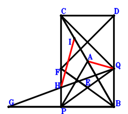
\(\because \) A is the midpoint of CB \(\therefore \small\overrightarrow{BA}=\dfrac{\small\overrightarrow{BC}}{2}\).\(\because \) CPBD is a parallelogram \(\therefore \small\overrightarrow{BD}=\small\overrightarrow{BC} - \small\overrightarrow{BP}\).\(\because \) E is the midpoint of PQ \(\therefore \small\overrightarrow{BE}=\dfrac{\small\overrightarrow{BP}}{2} + \dfrac{\small\overrightarrow{BQ}}{2}\).\(\because \) E is the midpoint of FB \(\therefore \small\overrightarrow{BF}=2 \small\overrightarrow{BE}=\small\overrightarrow{BP} + \small\overrightarrow{BQ}\).\(\because \) P is the midpoint of GB \(\therefore \small\overrightarrow{BG}=2 \small\overrightarrow{BP}\).\(\because \) H is the midpoint of GQ \(\therefore \small\overrightarrow{BH}=\dfrac{\small\overrightarrow{BG}}{2} + \dfrac{\small\overrightarrow{BQ}}{2}=\small\overrightarrow{BP} + \dfrac{\small\overrightarrow{BQ}}{2}\).\(\because \) C, I, B are collinear and IB=3CI \(\therefore \small\overrightarrow{BI}=\dfrac{3 \small\overrightarrow{BC}}{4}\).\(\because \) PA=PB \(\therefore - \small\overrightarrow{BP}^{2} + \small\overrightarrow{PA}^{2}=- \small\overrightarrow{BP}^{2} + \left(\small\overrightarrow{BA} - \small\overrightarrow{BP}\right)^{2}=- \small\overrightarrow{BP}^{2} + \left(\dfrac{\small\overrightarrow{BC}}{2} - \small\overrightarrow{BP}\right)^{2}=\dfrac{\small\overrightarrow{BC}^{2}}{4} - \small\overrightarrow{BC} \cdot \small\overrightarrow{BP}=0\) . . . . . . \(①\)\(\because \) CQ⊥FD \(\therefore \small\overrightarrow{DF} \cdot \small\overrightarrow{QC}=\left(\small\overrightarrow{BC} - \small\overrightarrow{BQ}\right) \cdot \left(- \small\overrightarrow{BD} + \small\overrightarrow{BF}\right)=\left(\small\overrightarrow{BC} - \small\overrightarrow{BQ}\right) \cdot \left(- \small\overrightarrow{BC} + 2 \small\overrightarrow{BP} + \small\overrightarrow{BQ}\right)=- \small\overrightarrow{BC}^{2} + 2 \small\overrightarrow{BC} \cdot \small\overrightarrow{BP} + 2 \small\overrightarrow{BC} \cdot \small\overrightarrow{BQ} - 2 \small\overrightarrow{BP} \cdot \small\overrightarrow{BQ} - \small\overrightarrow{BQ}^{2}=0\) . . . . . . \(②\)In conclusion, \(\small\overrightarrow{HI} \cdot \small\overrightarrow{QA}=\left(\small\overrightarrow{BA} - \small\overrightarrow{BQ}\right) \cdot \left(- \small\overrightarrow{BH} + \small\overrightarrow{BI}\right)=\left(\dfrac{\small\overrightarrow{BC}}{2} - \small\overrightarrow{BQ}\right) \cdot \left(\dfrac{3 \small\overrightarrow{BC}}{4} - \small\overrightarrow{BP} - \dfrac{\small\overrightarrow{BQ}}{2}\right)=\dfrac{3 \small\overrightarrow{BC}^{2}}{8} - \dfrac{\small\overrightarrow{BC} \cdot \small\overrightarrow{BP}}{2} - \small\overrightarrow{BC} \cdot \small\overrightarrow{BQ} + \small\overrightarrow{BP} \cdot \small\overrightarrow{BQ} + \dfrac{\small\overrightarrow{BQ}^{2}}{2}=-1/2\cdot①-1/2\cdot②=0\), that is, AQ⊥HI.
Exercise 8400： Let QBGC be a parallelogram. B, D, C are collinear and DC=3BD. A, D are the midpoints of BC, QE, respectively. P is the midpoint of HG and EF. QA⊥CF. AP=BP. Prove that BH⊥QC.
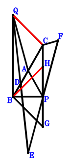
\(\because \) A is the midpoint of BC \(\therefore \small\overrightarrow{BA}=\dfrac{\small\overrightarrow{BC}}{2}\).\(\because \) B, D, C are collinear and DC=3BD \(\therefore \small\overrightarrow{BD}=\dfrac{\small\overrightarrow{BC}}{4}\).\(\because \) D is the midpoint of QE \(\therefore \small\overrightarrow{BE}=2 \small\overrightarrow{BD} - \small\overrightarrow{BQ}=\dfrac{\small\overrightarrow{BC}}{2} - \small\overrightarrow{BQ}\).\(\because \) P is the midpoint of EF \(\therefore \small\overrightarrow{BF}=- \small\overrightarrow{BE} + 2 \small\overrightarrow{BP}=- \dfrac{\small\overrightarrow{BC}}{2} + 2 \small\overrightarrow{BP} + \small\overrightarrow{BQ}\).\(\because \) QBGC is a parallelogram \(\therefore \small\overrightarrow{BG}=\small\overrightarrow{BC} - \small\overrightarrow{BQ}\).\(\because \) P is the midpoint of HG \(\therefore \small\overrightarrow{BH}=- \small\overrightarrow{BG} + 2 \small\overrightarrow{BP}=- \small\overrightarrow{BC} + 2 \small\overrightarrow{BP} + \small\overrightarrow{BQ}\).\(\because \) AP=BP \(\therefore - \small\overrightarrow{BP}^{2} + \small\overrightarrow{PA}^{2}=- \small\overrightarrow{BP}^{2} + \left(\small\overrightarrow{BA} - \small\overrightarrow{BP}\right)^{2}=- \small\overrightarrow{BP}^{2} + \left(\dfrac{\small\overrightarrow{BC}}{2} - \small\overrightarrow{BP}\right)^{2}=\dfrac{\small\overrightarrow{BC}^{2}}{4} - \small\overrightarrow{BC} \cdot \small\overrightarrow{BP}=0\) . . . . . . \(①\)\(\because \) QA⊥CF \(\therefore \small\overrightarrow{FC} \cdot \small\overrightarrow{QA}=\left(\small\overrightarrow{BA} - \small\overrightarrow{BQ}\right) \cdot \left(\small\overrightarrow{BC} - \small\overrightarrow{BF}\right)=\left(\dfrac{\small\overrightarrow{BC}}{2} - \small\overrightarrow{BQ}\right) \cdot \left(\dfrac{3 \small\overrightarrow{BC}}{2} - 2 \small\overrightarrow{BP} - \small\overrightarrow{BQ}\right)=\dfrac{3 \small\overrightarrow{BC}^{2}}{4} - \small\overrightarrow{BC} \cdot \small\overrightarrow{BP} - 2 \small\overrightarrow{BC} \cdot \small\overrightarrow{BQ} + 2 \small\overrightarrow{BP} \cdot \small\overrightarrow{BQ} + \small\overrightarrow{BQ}^{2}=0\) . . . . . . \(②\)In conclusion, \(\small\overrightarrow{BH} \cdot \small\overrightarrow{QC}=\small\overrightarrow{BH} \cdot \left(\small\overrightarrow{BC} - \small\overrightarrow{BQ}\right)=\left(\small\overrightarrow{BC} - \small\overrightarrow{BQ}\right) \cdot \left(- \small\overrightarrow{BC} + 2 \small\overrightarrow{BP} + \small\overrightarrow{BQ}\right)=- \small\overrightarrow{BC}^{2} + 2 \small\overrightarrow{BC} \cdot \small\overrightarrow{BP} + 2 \small\overrightarrow{BC} \cdot \small\overrightarrow{BQ} - 2 \small\overrightarrow{BP} \cdot \small\overrightarrow{BQ} - \small\overrightarrow{BQ}^{2}=-①-②=0\), that is, BH⊥QC.
Exercise 8971： Let DPBE and DCPA be parallelograms. A is the midpoint of CB. PB⊥QC and AQ⊥QE. Prove that \(PA^{2}=PB^{2} + QC^{2}\).
Exercise 9236： Let E, D, C be collinear and 2EC=3ED. Q, D, P are collinear and DP=2QD. B, H, C are collinear and HC=3BH. H, A are the midpoints of IG, BC, respectively. F is the midpoint of GC and QP. EB⊥BP. AP=QC. Prove that IP⊥QA.
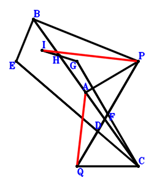
\(\because \) A is the midpoint of BC \(\therefore \small\overrightarrow{CA}=\dfrac{\small\overrightarrow{CB}}{2}\).\(\because \) Q, D, P are collinear and DP=2QD \(\therefore \small\overrightarrow{CD}=\dfrac{\small\overrightarrow{CP}}{3} + \dfrac{2 \small\overrightarrow{CQ}}{3}\).\(\because \) E, D, C are collinear and 2EC=3ED \(\therefore \small\overrightarrow{CE}=3 \small\overrightarrow{CD}=\small\overrightarrow{CP} + 2 \small\overrightarrow{CQ}\).\(\because \) F is the midpoint of QP \(\therefore \small\overrightarrow{CF}=\dfrac{\small\overrightarrow{CP}}{2} + \dfrac{\small\overrightarrow{CQ}}{2}\).\(\because \) F is the midpoint of GC \(\therefore \small\overrightarrow{CG}=2 \small\overrightarrow{CF}=\small\overrightarrow{CP} + \small\overrightarrow{CQ}\).\(\because \) B, H, C are collinear and HC=3BH \(\therefore \small\overrightarrow{CH}=\dfrac{3 \small\overrightarrow{CB}}{4}\).\(\because \) H is the midpoint of IG \(\therefore \small\overrightarrow{CI}=\dfrac{3 \small\overrightarrow{CB}}{2} - \small\overrightarrow{CG}=\dfrac{3 \small\overrightarrow{CB}}{2} - \small\overrightarrow{CP} - \small\overrightarrow{CQ}\).\(\because \) AP=QC \(\therefore \small\overrightarrow{PA}^{2} - \small\overrightarrow{QC}^{2}=- \small\overrightarrow{CQ}^{2} + \left(\small\overrightarrow{CA} - \small\overrightarrow{CP}\right)^{2}=- \small\overrightarrow{CQ}^{2} + \left(\dfrac{\small\overrightarrow{CB}}{2} - \small\overrightarrow{CP}\right)^{2}=\dfrac{\small\overrightarrow{CB}^{2}}{4} - \small\overrightarrow{CB} \cdot \small\overrightarrow{CP} + \small\overrightarrow{CP}^{2} - \small\overrightarrow{CQ}^{2}=0\) . . . . . . \(①\)\(\because \) EB⊥BP \(\therefore \small\overrightarrow{BP} \cdot \small\overrightarrow{EB}=\left(- \small\overrightarrow{CB} + \small\overrightarrow{CP}\right) \cdot \left(\small\overrightarrow{CB} - \small\overrightarrow{CE}\right)=\left(- \small\overrightarrow{CB} + \small\overrightarrow{CP}\right) \cdot \left(\small\overrightarrow{CB} - \small\overrightarrow{CP} - 2 \small\overrightarrow{CQ}\right)=- \small\overrightarrow{CB}^{2} + 2 \small\overrightarrow{CB} \cdot \small\overrightarrow{CP} + 2 \small\overrightarrow{CB} \cdot \small\overrightarrow{CQ} - \small\overrightarrow{CP}^{2} - 2 \small\overrightarrow{CP} \cdot \small\overrightarrow{CQ}=0\) . . . . . . \(②\)In conclusion, \(\pi \cdot \small\overrightarrow{QA}=\left(\small\overrightarrow{CA} - \small\overrightarrow{CQ}\right) \cdot \left(\small\overrightarrow{CI} - \small\overrightarrow{CP}\right)=\left(\dfrac{\small\overrightarrow{CB}}{2} - \small\overrightarrow{CQ}\right) \cdot \left(\dfrac{3 \small\overrightarrow{CB}}{2} - 2 \small\overrightarrow{CP} - \small\overrightarrow{CQ}\right)=\dfrac{3 \small\overrightarrow{CB}^{2}}{4} - \small\overrightarrow{CB} \cdot \small\overrightarrow{CP} - 2 \small\overrightarrow{CB} \cdot \small\overrightarrow{CQ} + 2 \small\overrightarrow{CP} \cdot \small\overrightarrow{CQ} + \small\overrightarrow{CQ}^{2}=-①-②=0\), that is, IP⊥QA.
Exercise 10012： Let EPBF be a trapezoid with PB//EF and PB=2EF. QCDB is a trapezoid with CQ//DB and CQ=2DB. C, E, B are collinear and EB=3CE. A, F are the midpoints of CB, GQ, respectively. CQ⊥PD. PA=PB. Prove that PG⊥AQ.
Exercise 11019： Let PEQA and FBQC be parallelograms. DQAP is a trapezoid with DQ//PA and DQ=2PA. A is the midpoint of BC. DB⊥QC. QA=PB. Prove that EF⊥PA.
Exercise 12219： Let DPBQ and EPBD be parallelograms. GPHF is a trapezoid with PH//GF and PH=2GF. F, A, G are the midpoints of PQ, CB, CA, respectively. EC⊥CQ. PA=PB. Prove that AQ⊥HB.
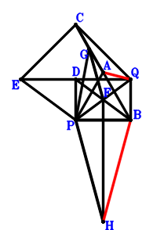
\(\because \) A is the midpoint of CB \(\therefore \small\overrightarrow{BA}=\dfrac{\small\overrightarrow{BC}}{2}\).\(\because \) DPBQ is a parallelogram \(\therefore \small\overrightarrow{BD}=\small\overrightarrow{BP} + \small\overrightarrow{BQ}\).\(\because \) EPBD is a parallelogram \(\therefore \small\overrightarrow{BE}=2 \small\overrightarrow{BP} + \small\overrightarrow{BQ}\).\(\because \) F is the midpoint of PQ \(\therefore \small\overrightarrow{BF}=\dfrac{\small\overrightarrow{BP}}{2} + \dfrac{\small\overrightarrow{BQ}}{2}\).\(\because \) G is the midpoint of CA \(\therefore \small\overrightarrow{BG}=\dfrac{\small\overrightarrow{BA}}{2} + \dfrac{\small\overrightarrow{BC}}{2}=\dfrac{3 \small\overrightarrow{BC}}{4}\).\(\because \) PH//GF and PH=2GF \(\therefore \small\overrightarrow{BH}=- \dfrac{3 \small\overrightarrow{BC}}{2} + 2 \small\overrightarrow{BF} + \small\overrightarrow{BP}=- \dfrac{3 \small\overrightarrow{BC}}{2} + 2 \small\overrightarrow{BP} + \small\overrightarrow{BQ}\).\(\because \) PA=PB \(\therefore - \small\overrightarrow{BP}^{2} + \small\overrightarrow{PA}^{2}=- \small\overrightarrow{BP}^{2} + \left(\small\overrightarrow{BA} - \small\overrightarrow{BP}\right)^{2}=- \small\overrightarrow{BP}^{2} + \left(\dfrac{\small\overrightarrow{BC}}{2} - \small\overrightarrow{BP}\right)^{2}=\dfrac{\small\overrightarrow{BC}^{2}}{4} - \small\overrightarrow{BC} \cdot \small\overrightarrow{BP}=0\) . . . . . . \(①\)\(\because \) EC⊥CQ \(\therefore \small\overrightarrow{CE} \cdot \small\overrightarrow{QC}=\left(- \small\overrightarrow{BC} + \small\overrightarrow{BE}\right) \cdot \left(\small\overrightarrow{BC} - \small\overrightarrow{BQ}\right)=\left(\small\overrightarrow{BC} - \small\overrightarrow{BQ}\right) \cdot \left(- \small\overrightarrow{BC} + 2 \small\overrightarrow{BP} + \small\overrightarrow{BQ}\right)=- \small\overrightarrow{BC}^{2} + 2 \small\overrightarrow{BC} \cdot \small\overrightarrow{BP} + 2 \small\overrightarrow{BC} \cdot \small\overrightarrow{BQ} - 2 \small\overrightarrow{BP} \cdot \small\overrightarrow{BQ} - \small\overrightarrow{BQ}^{2}=0\) . . . . . . \(②\)In conclusion, \(\small\overrightarrow{HB} \cdot \small\overrightarrow{QA}=- \small\overrightarrow{BH} \cdot \left(\small\overrightarrow{BA} - \small\overrightarrow{BQ}\right)=- \left(\dfrac{\small\overrightarrow{BC}}{2} - \small\overrightarrow{BQ}\right) \cdot \left(- \dfrac{3 \small\overrightarrow{BC}}{2} + 2 \small\overrightarrow{BP} + \small\overrightarrow{BQ}\right)=\dfrac{3 \small\overrightarrow{BC}^{2}}{4} - \small\overrightarrow{BC} \cdot \small\overrightarrow{BP} - 2 \small\overrightarrow{BC} \cdot \small\overrightarrow{BQ} + 2 \small\overrightarrow{BP} \cdot \small\overrightarrow{BQ} + \small\overrightarrow{BQ}^{2}=-①-②=0\), that is, AQ⊥HB.
Exercise 13547： Let FQBG and ECDA be parallelograms. GABE is a cyclic quadrilateral, AE intersects GB at P. A, Q, C are the midpoints of CB, DB, FQ, respectively. Prove that QA=CQ.
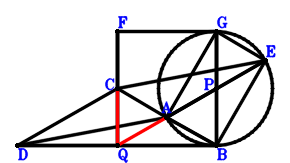
\(\because \) A is the midpoint of CB \(\therefore \small\overrightarrow{BA}=\dfrac{\small\overrightarrow{BC}}{2}\).\(\because \) Q is the midpoint of DB \(\therefore \small\overrightarrow{BD}=2 \small\overrightarrow{BQ}\).\(\because \) ECDA is a parallelogram \(\therefore \small\overrightarrow{BE}=\dfrac{3 \small\overrightarrow{BC}}{2} - \small\overrightarrow{BD}=\dfrac{3 \small\overrightarrow{BC}}{2} - 2 \small\overrightarrow{BQ}\).\(\because \) C is the midpoint of FQ \(\therefore \small\overrightarrow{BF}=2 \small\overrightarrow{BC} - \small\overrightarrow{BQ}\).\(\because \) FQBG is a parallelogram \(\therefore \small\overrightarrow{BG}=2 \small\overrightarrow{BC} - 2 \small\overrightarrow{BQ}\).\(\because \) GABE is a cyclic quadrilateral, AE intersects GB at P \( \therefore\small\overrightarrow{BP} \cdot \small\overrightarrow{PG} + \small\overrightarrow{PA} \cdot \small\overrightarrow{PE}=\small\overrightarrow{BP} \cdot \left(\small\overrightarrow{BG} - \small\overrightarrow{BP}\right) + \left(\small\overrightarrow{BA} - \small\overrightarrow{BP}\right) \cdot \left(\small\overrightarrow{BE} - \small\overrightarrow{BP}\right)=\small\overrightarrow{BP} \cdot \left(2 \small\overrightarrow{BC} - \small\overrightarrow{BP} - 2 \small\overrightarrow{BQ}\right) + \left(\dfrac{\small\overrightarrow{BC}}{2} - \small\overrightarrow{BP}\right) \cdot \left(\dfrac{3 \small\overrightarrow{BC}}{2} - \small\overrightarrow{BP} - 2 \small\overrightarrow{BQ}\right)=\dfrac{3 \small\overrightarrow{BC}^{2}}{4} - \small\overrightarrow{BC} \cdot \small\overrightarrow{BQ}=0.\)In conclusion, \(\small\overrightarrow{QA}^{2} - \small\overrightarrow{QC}^{2}=\left(\small\overrightarrow{BA} - \small\overrightarrow{BQ}\right)^{2} - \left(\small\overrightarrow{BC} - \small\overrightarrow{BQ}\right)^{2}=\left(\dfrac{\small\overrightarrow{BC}}{2} - \small\overrightarrow{BQ}\right)^{2} - \left(\small\overrightarrow{BC} - \small\overrightarrow{BQ}\right)^{2}=- \dfrac{3 \small\overrightarrow{BC}^{2}}{4} + \small\overrightarrow{BC} \cdot \small\overrightarrow{BQ}=0\), that is, QA=CQ.
Exercise 13996： Let PEQF be a parallelogram. BQCG is a trapezoid with BQ//GC and BQ=2GC. B, D, C are collinear and DC=3BD. A, G, D are the midpoints of BC, QH, EP, respectively. AP=QC. Given that B, P, H are collinear and QA//CF, prove that \(CF·QA=BP·PH\).
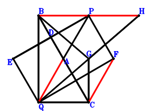
\(\because \) A is the midpoint of BC \(\therefore \small\overrightarrow{CA}=\dfrac{\small\overrightarrow{CB}}{2}\).\(\because \) B, D, C are collinear and DC=3BD \(\therefore \small\overrightarrow{CD}=\dfrac{3 \small\overrightarrow{CB}}{4}\).\(\because \) D is the midpoint of EP \(\therefore \small\overrightarrow{CE}=2 \small\overrightarrow{CD} - \small\overrightarrow{CP}=\dfrac{3 \small\overrightarrow{CB}}{2} - \small\overrightarrow{CP}\).\(\because \) PEQF is a parallelogram \(\therefore \small\overrightarrow{CF}=- \small\overrightarrow{CE} + \small\overrightarrow{CP} + \small\overrightarrow{CQ}=- \dfrac{3 \small\overrightarrow{CB}}{2} + 2 \small\overrightarrow{CP} + \small\overrightarrow{CQ}\).\(\because \) BQ//GC and BQ=2GC \(\therefore \small\overrightarrow{CG}=\dfrac{\small\overrightarrow{CB}}{2} - \dfrac{\small\overrightarrow{CQ}}{2}\).\(\because \) G is the midpoint of QH \(\therefore \small\overrightarrow{CH}=2 \small\overrightarrow{CG} - \small\overrightarrow{CQ}=\small\overrightarrow{CB} - 2 \small\overrightarrow{CQ}\).\(\because \) AP=QC \( \therefore\small\overrightarrow{PA}^{2} - \small\overrightarrow{QC}^{2}=- \small\overrightarrow{CQ}^{2} + \left(\small\overrightarrow{CA} - \small\overrightarrow{CP}\right)^{2}=- \small\overrightarrow{CQ}^{2} + \left(\dfrac{\small\overrightarrow{CB}}{2} - \small\overrightarrow{CP}\right)^{2}=\dfrac{\small\overrightarrow{CB}^{2}}{4} - \small\overrightarrow{CB} \cdot \small\overrightarrow{CP} + \small\overrightarrow{CP}^{2} - \small\overrightarrow{CQ}^{2}=0.\)In conclusion, \(\small\overrightarrow{BP} \cdot \small\overrightarrow{PH} + \small\overrightarrow{FC} \cdot \small\overrightarrow{QA}=- \small\overrightarrow{CF} \cdot \left(\small\overrightarrow{CA} - \small\overrightarrow{CQ}\right) + \left(- \small\overrightarrow{CB} + \small\overrightarrow{CP}\right) \cdot \left(\small\overrightarrow{CH} - \small\overrightarrow{CP}\right)=\left(- \small\overrightarrow{CB} + \small\overrightarrow{CP}\right) \cdot \left(\small\overrightarrow{CB} - \small\overrightarrow{CP} - 2 \small\overrightarrow{CQ}\right) - \left(\dfrac{\small\overrightarrow{CB}}{2} - \small\overrightarrow{CQ}\right) \cdot \left(- \dfrac{3 \small\overrightarrow{CB}}{2} + 2 \small\overrightarrow{CP} + \small\overrightarrow{CQ}\right)=- \dfrac{\small\overrightarrow{CB}^{2}}{4} + \small\overrightarrow{CB} \cdot \small\overrightarrow{CP} - \small\overrightarrow{CP}^{2} + \small\overrightarrow{CQ}^{2}=0\)\(\because\) B, P, H are collinear and QA//CF \(\therefore\) \(CF·QA=BP·PH\).
Exercise 14168： Let PGHC be a parallelogram. AQCD is a trapezoid with QC//AD and QC=2AD. FBQC is a trapezoid with FC//BQ and FC=2BQ. A, D, G are the midpoints of BC, QE, BF, respectively. BP⊥PE. QA=QC. Prove that AP⊥QH.
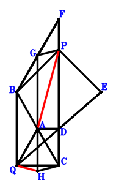
\(\because \) A is the midpoint of BC \(\therefore \small\overrightarrow{CA}=\dfrac{\small\overrightarrow{CB}}{2}\).\(\because \) QC//AD and QC=2AD \(\therefore \small\overrightarrow{CD}=\dfrac{\small\overrightarrow{CB}}{2} - \dfrac{\small\overrightarrow{CQ}}{2}\).\(\because \) D is the midpoint of QE \(\therefore \small\overrightarrow{CE}=2 \small\overrightarrow{CD} - \small\overrightarrow{CQ}=\small\overrightarrow{CB} - 2 \small\overrightarrow{CQ}\).\(\because \) FC//BQ and FC=2BQ \(\therefore \small\overrightarrow{CF}=2 \small\overrightarrow{CB} - 2 \small\overrightarrow{CQ}\).\(\because \) G is the midpoint of BF \(\therefore \small\overrightarrow{CG}=\dfrac{\small\overrightarrow{CB}}{2} + \dfrac{\small\overrightarrow{CF}}{2}=\dfrac{3 \small\overrightarrow{CB}}{2} - \small\overrightarrow{CQ}\).\(\because \) PGHC is a parallelogram \(\therefore \small\overrightarrow{CH}=\dfrac{3 \small\overrightarrow{CB}}{2} - \small\overrightarrow{CP} - \small\overrightarrow{CQ}\).\(\because \) QA=QC \(\therefore \small\overrightarrow{QA}^{2} - \small\overrightarrow{QC}^{2}=- \small\overrightarrow{CQ}^{2} + \left(\small\overrightarrow{CA} - \small\overrightarrow{CQ}\right)^{2}=- \small\overrightarrow{CQ}^{2} + \left(\dfrac{\small\overrightarrow{CB}}{2} - \small\overrightarrow{CQ}\right)^{2}=\dfrac{\small\overrightarrow{CB}^{2}}{4} - \small\overrightarrow{CB} \cdot \small\overrightarrow{CQ}=0\) . . . . . . \(①\)\(\because \) BP⊥PE \(\therefore \small\overrightarrow{BP} \cdot \small\overrightarrow{PE}=\left(- \small\overrightarrow{CB} + \small\overrightarrow{CP}\right) \cdot \left(\small\overrightarrow{CE} - \small\overrightarrow{CP}\right)=\left(- \small\overrightarrow{CB} + \small\overrightarrow{CP}\right) \cdot \left(\small\overrightarrow{CB} - \small\overrightarrow{CP} - 2 \small\overrightarrow{CQ}\right)=- \small\overrightarrow{CB}^{2} + 2 \small\overrightarrow{CB} \cdot \small\overrightarrow{CP} + 2 \small\overrightarrow{CB} \cdot \small\overrightarrow{CQ} - \small\overrightarrow{CP}^{2} - 2 \small\overrightarrow{CP} \cdot \small\overrightarrow{CQ}=0\) . . . . . . \(②\)In conclusion, \(\small\overrightarrow{PA} \cdot \small\overrightarrow{QH}=\left(\small\overrightarrow{CA} - \small\overrightarrow{CP}\right) \cdot \left(\small\overrightarrow{CH} - \small\overrightarrow{CQ}\right)=\left(\dfrac{\small\overrightarrow{CB}}{2} - \small\overrightarrow{CP}\right) \cdot \left(\dfrac{3 \small\overrightarrow{CB}}{2} - \small\overrightarrow{CP} - 2 \small\overrightarrow{CQ}\right)=\dfrac{3 \small\overrightarrow{CB}^{2}}{4} - 2 \small\overrightarrow{CB} \cdot \small\overrightarrow{CP} - \small\overrightarrow{CB} \cdot \small\overrightarrow{CQ} + \small\overrightarrow{CP}^{2} + 2 \small\overrightarrow{CP} \cdot \small\overrightarrow{CQ}=-①-②=0\), that is, AP⊥QH.
Exercise 14206： Let PGFC and EQDP be parallelograms. Q is the midpoint of FB. A is the midpoint of BC and DP. QA⊥AE. AP=QC. Prove that GC⊥BP.
Exercise 15505： Let DPCQ be a parallelogram. EPCQ is a trapezoid with PC//EQ and PC=2EQ. A is the midpoint of BC. E is the midpoint of DQ. PA⊥AF. AQ=QC. Prove that PB⊥EA.
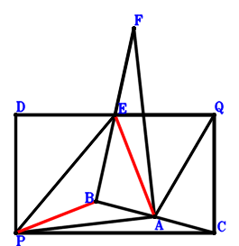
\(\because \) A is the midpoint of BC \(\therefore \small\overrightarrow{CA}=\dfrac{\small\overrightarrow{CB}}{2}\).\(\because \) DPCQ is a parallelogram \(\therefore \small\overrightarrow{CD}=\small\overrightarrow{CP} + \small\overrightarrow{CQ}\).\(\because \) E is the midpoint of DQ \(\therefore \small\overrightarrow{CE}=\dfrac{\small\overrightarrow{CD}}{2} + \dfrac{\small\overrightarrow{CQ}}{2}=\dfrac{\small\overrightarrow{CP}}{2} + \small\overrightarrow{CQ}\).\(\because \) E is the midpoint of BF \(\therefore \small\overrightarrow{CF}=- \small\overrightarrow{CB} + 2 \small\overrightarrow{CE}=- \small\overrightarrow{CB} + \small\overrightarrow{CP} + 2 \small\overrightarrow{CQ}\).\(\because \) PC//EQ and PC=2EQ \(\therefore \small\overrightarrow{QA}^{2} - \small\overrightarrow{QC}^{2}=- \small\overrightarrow{CQ}^{2} + \left(\small\overrightarrow{CA} - \small\overrightarrow{CQ}\right)^{2}=- \small\overrightarrow{CQ}^{2} + \left(\dfrac{\small\overrightarrow{CB}}{2} - \small\overrightarrow{CQ}\right)^{2}=\dfrac{\small\overrightarrow{CB}^{2}}{4} - \small\overrightarrow{CB} \cdot \small\overrightarrow{CQ}=0\) . . . . . . \(①\)\(\because \) AQ=QC \(\therefore \small\overrightarrow{FA} \cdot \small\overrightarrow{PA}=\left(\small\overrightarrow{CA} - \small\overrightarrow{CF}\right) \cdot \left(\small\overrightarrow{CA} - \small\overrightarrow{CP}\right)=\left(\dfrac{\small\overrightarrow{CB}}{2} - \small\overrightarrow{CP}\right) \cdot \left(\dfrac{3 \small\overrightarrow{CB}}{2} - \small\overrightarrow{CP} - 2 \small\overrightarrow{CQ}\right)=\dfrac{3 \small\overrightarrow{CB}^{2}}{4} - 2 \small\overrightarrow{CB} \cdot \small\overrightarrow{CP} - \small\overrightarrow{CB} \cdot \small\overrightarrow{CQ} + \small\overrightarrow{CP}^{2} + 2 \small\overrightarrow{CP} \cdot \small\overrightarrow{CQ}=0\) . . . . . . \(②\)In conclusion, \(\small\overrightarrow{BP} \cdot \small\overrightarrow{EA}=\left(\small\overrightarrow{CA} - \small\overrightarrow{CE}\right) \cdot \left(- \small\overrightarrow{CB} + \small\overrightarrow{CP}\right)=\left(- \small\overrightarrow{CB} + \small\overrightarrow{CP}\right) \cdot \left(\dfrac{\small\overrightarrow{CB}}{2} - \dfrac{\small\overrightarrow{CP}}{2} - \small\overrightarrow{CQ}\right)=- \dfrac{\small\overrightarrow{CB}^{2}}{2} + \small\overrightarrow{CB} \cdot \small\overrightarrow{CP} + \small\overrightarrow{CB} \cdot \small\overrightarrow{CQ} - \dfrac{\small\overrightarrow{CP}^{2}}{2} - \small\overrightarrow{CP} \cdot \small\overrightarrow{CQ}=-1/2\cdot①-1/2\cdot②=0\), that is, PB⊥EA.
Exercise 15630： Let EBDA be a parallelogram. PFQC is a trapezoid with CQ//PF and CQ=2PF. A, Q are the midpoints of BC, CD, respectively. AQ=PB. Given that E, P, A are collinear and CQ//FB, prove that \(EP·PA=2·CQ·FB\).
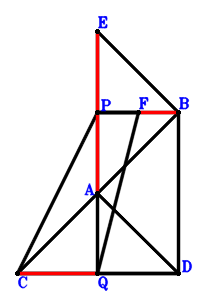
\(\because \) A is the midpoint of BC \(\therefore \small\overrightarrow{BA}=\dfrac{\small\overrightarrow{BC}}{2}\).\(\because \) Q is the midpoint of CD \(\therefore \small\overrightarrow{BD}=- \small\overrightarrow{BC} + 2 \small\overrightarrow{BQ}\).\(\because \) EBDA is a parallelogram \(\therefore \small\overrightarrow{BE}=\dfrac{\small\overrightarrow{BC}}{2} - \small\overrightarrow{BD}=\dfrac{3 \small\overrightarrow{BC}}{2} - 2 \small\overrightarrow{BQ}\).\(\because \) CQ//PF and CQ=2PF \(\therefore \small\overrightarrow{BF}=- \dfrac{\small\overrightarrow{BC}}{2} + \small\overrightarrow{BP} + \dfrac{\small\overrightarrow{BQ}}{2}\).\(\because \) AQ=PB \( \therefore- \small\overrightarrow{BP}^{2} + \small\overrightarrow{QA}^{2}=- \small\overrightarrow{BP}^{2} + \left(\small\overrightarrow{BA} - \small\overrightarrow{BQ}\right)^{2}=- \small\overrightarrow{BP}^{2} + \left(\dfrac{\small\overrightarrow{BC}}{2} - \small\overrightarrow{BQ}\right)^{2}=\dfrac{\small\overrightarrow{BC}^{2}}{4} - \small\overrightarrow{BC} \cdot \small\overrightarrow{BQ} - \small\overrightarrow{BP}^{2} + \small\overrightarrow{BQ}^{2}=0.\)In conclusion, \(2 \small\overrightarrow{BF} \cdot \small\overrightarrow{QC} + \small\overrightarrow{PA} \cdot \small\overrightarrow{PE}=2 \small\overrightarrow{BF} \cdot \left(\small\overrightarrow{BC} - \small\overrightarrow{BQ}\right) + \left(\small\overrightarrow{BA} - \small\overrightarrow{BP}\right) \cdot \left(\small\overrightarrow{BE} - \small\overrightarrow{BP}\right)=\left(\dfrac{\small\overrightarrow{BC}}{2} - \small\overrightarrow{BP}\right) \cdot \left(\dfrac{3 \small\overrightarrow{BC}}{2} - \small\overrightarrow{BP} - 2 \small\overrightarrow{BQ}\right) + 2 \left(\small\overrightarrow{BC} - \small\overrightarrow{BQ}\right) \cdot \left(- \dfrac{\small\overrightarrow{BC}}{2} + \small\overrightarrow{BP} + \dfrac{\small\overrightarrow{BQ}}{2}\right)=- \dfrac{\small\overrightarrow{BC}^{2}}{4} + \small\overrightarrow{BC} \cdot \small\overrightarrow{BQ} + \small\overrightarrow{BP}^{2} - \small\overrightarrow{BQ}^{2}=0\)\(\because\) E, P, A are collinear and CQ//FB \(\therefore\) \(EP·PA=2·CQ·FB\).
Exercise 16217： Let FBGC be a parallelogram. PDQE is a trapezoid with PE//DQ and PE=2DQ. B, D, C are collinear and DC=3BD. P, A are the midpoints of FB, BC, respectively. AQ=PB. Given that C, Q, G are collinear and PA//CE, prove that \(CE·PA=CQ·QG\).
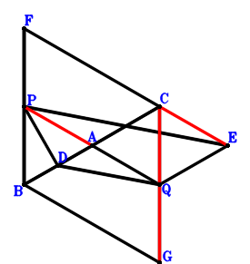
\(\because \) A is the midpoint of BC \(\therefore \small\overrightarrow{BA}=\dfrac{\small\overrightarrow{BC}}{2}\).\(\because \) B, D, C are collinear and DC=3BD \(\therefore \small\overrightarrow{BD}=\dfrac{\small\overrightarrow{BC}}{4}\).\(\because \) PE//DQ and PE=2DQ \(\therefore \small\overrightarrow{BE}=- 2 \small\overrightarrow{BD} + \small\overrightarrow{BP} + 2 \small\overrightarrow{BQ}=- \dfrac{\small\overrightarrow{BC}}{2} + \small\overrightarrow{BP} + 2 \small\overrightarrow{BQ}\).\(\because \) P is the midpoint of FB \(\therefore \small\overrightarrow{BF}=2 \small\overrightarrow{BP}\).\(\because \) FBGC is a parallelogram \(\therefore \small\overrightarrow{BG}=\small\overrightarrow{BC} - \small\overrightarrow{BF}=\small\overrightarrow{BC} - 2 \small\overrightarrow{BP}\).\(\because \) AQ=PB \( \therefore- \small\overrightarrow{BP}^{2} + \small\overrightarrow{QA}^{2}=- \small\overrightarrow{BP}^{2} + \left(\small\overrightarrow{BA} - \small\overrightarrow{BQ}\right)^{2}=- \small\overrightarrow{BP}^{2} + \left(\dfrac{\small\overrightarrow{BC}}{2} - \small\overrightarrow{BQ}\right)^{2}=\dfrac{\small\overrightarrow{BC}^{2}}{4} - \small\overrightarrow{BC} \cdot \small\overrightarrow{BQ} - \small\overrightarrow{BP}^{2} + \small\overrightarrow{BQ}^{2}=0.\)In conclusion, \(\small\overrightarrow{EC} \cdot \small\overrightarrow{PA} + \small\overrightarrow{GQ} \cdot \small\overrightarrow{QC}=\left(\small\overrightarrow{BA} - \small\overrightarrow{BP}\right) \cdot \left(\small\overrightarrow{BC} - \small\overrightarrow{BE}\right) + \left(\small\overrightarrow{BC} - \small\overrightarrow{BQ}\right) \cdot \left(- \small\overrightarrow{BG} + \small\overrightarrow{BQ}\right)=\left(\dfrac{\small\overrightarrow{BC}}{2} - \small\overrightarrow{BP}\right) \cdot \left(\dfrac{3 \small\overrightarrow{BC}}{2} - \small\overrightarrow{BP} - 2 \small\overrightarrow{BQ}\right) + \left(\small\overrightarrow{BC} - \small\overrightarrow{BQ}\right) \cdot \left(- \small\overrightarrow{BC} + 2 \small\overrightarrow{BP} + \small\overrightarrow{BQ}\right)=- \dfrac{\small\overrightarrow{BC}^{2}}{4} + \small\overrightarrow{BC} \cdot \small\overrightarrow{BQ} + \small\overrightarrow{BP}^{2} - \small\overrightarrow{BQ}^{2}=0\)\(\because\) C, Q, G are collinear and PA//CE \(\therefore\) \(CE·PA=CQ·QG\).
Exercise 16221： Let EDQB be a parallelogram. G, A, Q are collinear and GQ=3GA. F, C, A are the midpoints of PQ, DQ, CB, respectively. EP⊥PB. AQ=CQ. Prove that PA⊥FG.
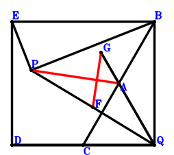
\(\because \) A is the midpoint of CB \(\therefore \small\overrightarrow{QA}=\dfrac{\small\overrightarrow{QB}}{2} + \dfrac{\small\overrightarrow{QC}}{2}\).\(\because \) C is the midpoint of DQ \(\therefore \small\overrightarrow{QD}=2 \small\overrightarrow{QC}\).\(\because \) EDQB is a parallelogram \(\therefore \small\overrightarrow{QE}=\small\overrightarrow{QB} + 2 \small\overrightarrow{QC}\).\(\because \) F is the midpoint of PQ \(\therefore \small\overrightarrow{QF}=\dfrac{\small\overrightarrow{QP}}{2}\).\(\because \) G, A, Q are collinear and GQ=3GA \(\therefore \small\overrightarrow{QG}=\dfrac{3 \small\overrightarrow{QA}}{2}=\dfrac{3 \small\overrightarrow{QB}}{4} + \dfrac{3 \small\overrightarrow{QC}}{4}\).\(\because \) AQ=CQ \(\therefore \small\overrightarrow{QA}^{2} - \small\overrightarrow{QC}^{2}=- \small\overrightarrow{QC}^{2} + \left(\dfrac{\small\overrightarrow{QB}}{2} + \dfrac{\small\overrightarrow{QC}}{2}\right)^{2}=\dfrac{\small\overrightarrow{QB}^{2}}{4} + \dfrac{\small\overrightarrow{QB} \cdot \small\overrightarrow{QC}}{2} - \dfrac{3 \small\overrightarrow{QC}^{2}}{4}=0\) . . . . . . \(①\)\(\because \) EP⊥PB \(\therefore \small\overrightarrow{BP} \cdot \small\overrightarrow{PE}=\left(- \small\overrightarrow{QB} + \small\overrightarrow{QP}\right) \cdot \left(\small\overrightarrow{QE} - \small\overrightarrow{QP}\right)=\left(- \small\overrightarrow{QB} + \small\overrightarrow{QP}\right) \cdot \left(\small\overrightarrow{QB} + 2 \small\overrightarrow{QC} - \small\overrightarrow{QP}\right)=- \small\overrightarrow{QB}^{2} - 2 \small\overrightarrow{QB} \cdot \small\overrightarrow{QC} + 2 \small\overrightarrow{QB} \cdot \small\overrightarrow{QP} + 2 \small\overrightarrow{QC} \cdot \small\overrightarrow{QP} - \small\overrightarrow{QP}^{2}=0\) . . . . . . \(②\)In conclusion, \(\small\overrightarrow{FG} \cdot \small\overrightarrow{PA}=\left(\small\overrightarrow{QA} - \small\overrightarrow{QP}\right) \cdot \left(- \small\overrightarrow{QF} + \small\overrightarrow{QG}\right)=\left(\dfrac{\small\overrightarrow{QB}}{2} + \dfrac{\small\overrightarrow{QC}}{2} - \small\overrightarrow{QP}\right) \cdot \left(\dfrac{3 \small\overrightarrow{QB}}{4} + \dfrac{3 \small\overrightarrow{QC}}{4} - \dfrac{\small\overrightarrow{QP}}{2}\right)=\dfrac{3 \small\overrightarrow{QB}^{2}}{8} + \dfrac{3 \small\overrightarrow{QB} \cdot \small\overrightarrow{QC}}{4} - \small\overrightarrow{QB} \cdot \small\overrightarrow{QP} + \dfrac{3 \small\overrightarrow{QC}^{2}}{8} - \small\overrightarrow{QC} \cdot \small\overrightarrow{QP} + \dfrac{\small\overrightarrow{QP}^{2}}{2}=-1/2\cdot①-1/2\cdot②=0\), that is, PA⊥FG.
Exercise 16349： Let BQCE be a trapezoid with QC//BE and 2QC=3BE. AQGP is a trapezoid with GP//QA and GP=2QA. E, F, C are collinear and FC=3EF. A, D are the midpoints of BC, QP, respectively. AP⊥DF. QA=QC. Prove that GC⊥BP.
Exercise 16612： Let GHQB be a parallelogram. DPBE is a trapezoid with DE//PB and DE=2PB. DBQC is a trapezoid with BD//QC and BD=2QC. A, P, F are the midpoints of BC, GC, CE, respectively. PA⊥QF. QA=PB. Prove that HB⊥QC.
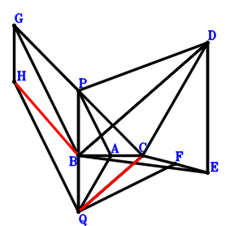
\(\because \) A is the midpoint of BC \(\therefore \small\overrightarrow{BA}=\dfrac{\small\overrightarrow{BC}}{2}\).\(\because \) BD//QC and BD=2QC \(\therefore \small\overrightarrow{BD}=2 \small\overrightarrow{BC} - 2 \small\overrightarrow{BQ}\).\(\because \) DE//PB and DE=2PB \(\therefore \small\overrightarrow{BE}=2 \small\overrightarrow{BC} - 2 \small\overrightarrow{BP} - 2 \small\overrightarrow{BQ}\).\(\because \) F is the midpoint of CE \(\therefore \small\overrightarrow{BF}=\dfrac{\small\overrightarrow{BC}}{2} + \dfrac{\small\overrightarrow{BE}}{2}=\dfrac{3 \small\overrightarrow{BC}}{2} - \small\overrightarrow{BP} - \small\overrightarrow{BQ}\).\(\because \) P is the midpoint of GC \(\therefore \small\overrightarrow{BG}=- \small\overrightarrow{BC} + 2 \small\overrightarrow{BP}\).\(\because \) GHQB is a parallelogram \(\therefore \small\overrightarrow{BH}=- \small\overrightarrow{BC} + 2 \small\overrightarrow{BP} + \small\overrightarrow{BQ}\).\(\because \) QA=PB \(\therefore - \small\overrightarrow{BP}^{2} + \small\overrightarrow{QA}^{2}=- \small\overrightarrow{BP}^{2} + \left(\small\overrightarrow{BA} - \small\overrightarrow{BQ}\right)^{2}=- \small\overrightarrow{BP}^{2} + \left(\dfrac{\small\overrightarrow{BC}}{2} - \small\overrightarrow{BQ}\right)^{2}=\dfrac{\small\overrightarrow{BC}^{2}}{4} - \small\overrightarrow{BC} \cdot \small\overrightarrow{BQ} - \small\overrightarrow{BP}^{2} + \small\overrightarrow{BQ}^{2}=0\) . . . . . . \(①\)\(\because \) PA⊥QF \(\therefore \small\overrightarrow{PA} \cdot \small\overrightarrow{QF}=\left(\small\overrightarrow{BA} - \small\overrightarrow{BP}\right) \cdot \left(\small\overrightarrow{BF} - \small\overrightarrow{BQ}\right)=\left(\dfrac{\small\overrightarrow{BC}}{2} - \small\overrightarrow{BP}\right) \cdot \left(\dfrac{3 \small\overrightarrow{BC}}{2} - \small\overrightarrow{BP} - 2 \small\overrightarrow{BQ}\right)=\dfrac{3 \small\overrightarrow{BC}^{2}}{4} - 2 \small\overrightarrow{BC} \cdot \small\overrightarrow{BP} - \small\overrightarrow{BC} \cdot \small\overrightarrow{BQ} + \small\overrightarrow{BP}^{2} + 2 \small\overrightarrow{BP} \cdot \small\overrightarrow{BQ}=0\) . . . . . . \(②\)In conclusion, \(\small\overrightarrow{BH} \cdot \small\overrightarrow{QC}=\small\overrightarrow{BH} \cdot \left(\small\overrightarrow{BC} - \small\overrightarrow{BQ}\right)=\left(\small\overrightarrow{BC} - \small\overrightarrow{BQ}\right) \cdot \left(- \small\overrightarrow{BC} + 2 \small\overrightarrow{BP} + \small\overrightarrow{BQ}\right)=- \small\overrightarrow{BC}^{2} + 2 \small\overrightarrow{BC} \cdot \small\overrightarrow{BP} + 2 \small\overrightarrow{BC} \cdot \small\overrightarrow{BQ} - 2 \small\overrightarrow{BP} \cdot \small\overrightarrow{BQ} - \small\overrightarrow{BQ}^{2}=-①-②=0\), that is, HB⊥QC.
Exercise 17360： Let APBD be a trapezoid with PB//AD and PB=2AD. D, P are the midpoints of PE, GF, respectively. A is the midpoint of CB and FQ. CQ⊥QE. PA=PB. Prove that GA⊥AQ.
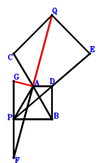
\(\because \) A is the midpoint of CB \(\therefore \small\overrightarrow{BA}=\dfrac{\small\overrightarrow{BC}}{2}\).\(\because \) A is the midpoint of CB \(\therefore \small\overrightarrow{BD}=\dfrac{\small\overrightarrow{BC}}{2} - \dfrac{\small\overrightarrow{BP}}{2}\).\(\because \) PB//AD and PB=2AD \(\therefore \small\overrightarrow{BE}=2 \small\overrightarrow{BD} - \small\overrightarrow{BP}=\small\overrightarrow{BC} - 2 \small\overrightarrow{BP}\).\(\because \) D is the midpoint of PE \(\therefore \small\overrightarrow{BF}=2 \small\overrightarrow{BA} - \small\overrightarrow{BQ}=\small\overrightarrow{BC} - \small\overrightarrow{BQ}\).\(\because \) A is the midpoint of FQ \(\therefore \small\overrightarrow{BG}=- \small\overrightarrow{BF} + 2 \small\overrightarrow{BP}=- \small\overrightarrow{BC} + 2 \small\overrightarrow{BP} + \small\overrightarrow{BQ}\).\(\because \) P is the midpoint of GF \(\therefore - \small\overrightarrow{BP}^{2} + \small\overrightarrow{PA}^{2}=- \small\overrightarrow{BP}^{2} + \left(\small\overrightarrow{BA} - \small\overrightarrow{BP}\right)^{2}=- \small\overrightarrow{BP}^{2} + \left(\dfrac{\small\overrightarrow{BC}}{2} - \small\overrightarrow{BP}\right)^{2}=\dfrac{\small\overrightarrow{BC}^{2}}{4} - \small\overrightarrow{BC} \cdot \small\overrightarrow{BP}=0\) . . . . . . \(①\)\(\because \) PA=PB \(\therefore \small\overrightarrow{EQ} \cdot \small\overrightarrow{QC}=\left(\small\overrightarrow{BC} - \small\overrightarrow{BQ}\right) \cdot \left(- \small\overrightarrow{BE} + \small\overrightarrow{BQ}\right)=\left(\small\overrightarrow{BC} - \small\overrightarrow{BQ}\right) \cdot \left(- \small\overrightarrow{BC} + 2 \small\overrightarrow{BP} + \small\overrightarrow{BQ}\right)=- \small\overrightarrow{BC}^{2} + 2 \small\overrightarrow{BC} \cdot \small\overrightarrow{BP} + 2 \small\overrightarrow{BC} \cdot \small\overrightarrow{BQ} - 2 \small\overrightarrow{BP} \cdot \small\overrightarrow{BQ} - \small\overrightarrow{BQ}^{2}=0\) . . . . . . \(②\)In conclusion, \(\small\overrightarrow{GA} \cdot \small\overrightarrow{QA}=\left(\small\overrightarrow{BA} - \small\overrightarrow{BG}\right) \cdot \left(\small\overrightarrow{BA} - \small\overrightarrow{BQ}\right)=\left(\dfrac{\small\overrightarrow{BC}}{2} - \small\overrightarrow{BQ}\right) \cdot \left(\dfrac{3 \small\overrightarrow{BC}}{2} - 2 \small\overrightarrow{BP} - \small\overrightarrow{BQ}\right)=\dfrac{3 \small\overrightarrow{BC}^{2}}{4} - \small\overrightarrow{BC} \cdot \small\overrightarrow{BP} - 2 \small\overrightarrow{BC} \cdot \small\overrightarrow{BQ} + 2 \small\overrightarrow{BP} \cdot \small\overrightarrow{BQ} + \small\overrightarrow{BQ}^{2}=-①-②=0\), that is, GA⊥AQ.
Exercise 22600： Let EPBF be a parallelogram. CPBG is a trapezoid with CG//PB and CG=2PB. DCPB is a trapezoid with BD//PC and BD=2PC. A, E are the midpoints of CB, CD, respectively. A, Q, F are collinear and \(PA^{2}=AQ \cdot QF\). Given that C, Q, G are collinear, prove that \(PB^{2}=CQ \cdot QG\).
\(\because \) A is the midpoint of CB \(\therefore \small\overrightarrow{BA}=\dfrac{\small\overrightarrow{BC}}{2}\).\(\because \) BD//PC and BD=2PC \(\therefore \small\overrightarrow{BD}=2 \small\overrightarrow{BC} - 2 \small\overrightarrow{BP}\).\(\because \) E is the midpoint of CD \(\therefore \small\overrightarrow{BE}=\dfrac{\small\overrightarrow{BC}}{2} + \dfrac{\small\overrightarrow{BD}}{2}=\dfrac{3 \small\overrightarrow{BC}}{2} - \small\overrightarrow{BP}\).\(\because \) EPBF is a parallelogram \(\therefore \small\overrightarrow{BF}=\dfrac{3 \small\overrightarrow{BC}}{2} - 2 \small\overrightarrow{BP}\).\(\because \) CG//PB and CG=2PB \(\therefore \small\overrightarrow{BG}=\small\overrightarrow{BC} - 2 \small\overrightarrow{BP}\).\(\because \) A, Q, F are collinear and \(PA^{2}=AQ \cdot QF\) \( \therefore\small\overrightarrow{PA}^{2} + \small\overrightarrow{QA} \cdot \small\overrightarrow{QF}=\left(\small\overrightarrow{BA} - \small\overrightarrow{BP}\right)^{2} + \left(\small\overrightarrow{BA} - \small\overrightarrow{BQ}\right) \cdot \left(\small\overrightarrow{BF} - \small\overrightarrow{BQ}\right)=\left(\dfrac{\small\overrightarrow{BC}}{2} - \small\overrightarrow{BP}\right)^{2} + \left(\dfrac{\small\overrightarrow{BC}}{2} - \small\overrightarrow{BQ}\right) \cdot \left(\dfrac{3 \small\overrightarrow{BC}}{2} - 2 \small\overrightarrow{BP} - \small\overrightarrow{BQ}\right)=\small\overrightarrow{BC}^{2} - 2 \small\overrightarrow{BC} \cdot \small\overrightarrow{BP} - 2 \small\overrightarrow{BC} \cdot \small\overrightarrow{BQ} + \small\overrightarrow{BP}^{2} + 2 \small\overrightarrow{BP} \cdot \small\overrightarrow{BQ} + \small\overrightarrow{BQ}^{2}=0.\)In conclusion, \(- \small\overrightarrow{BP}^{2} + \small\overrightarrow{GQ} \cdot \small\overrightarrow{QC}=- \small\overrightarrow{BP}^{2} + \left(\small\overrightarrow{BC} - \small\overrightarrow{BQ}\right) \cdot \left(- \small\overrightarrow{BG} + \small\overrightarrow{BQ}\right)=- \small\overrightarrow{BP}^{2} + \left(\small\overrightarrow{BC} - \small\overrightarrow{BQ}\right) \cdot \left(- \small\overrightarrow{BC} + 2 \small\overrightarrow{BP} + \small\overrightarrow{BQ}\right)=- \small\overrightarrow{BC}^{2} + 2 \small\overrightarrow{BC} \cdot \small\overrightarrow{BP} + 2 \small\overrightarrow{BC} \cdot \small\overrightarrow{BQ} - \small\overrightarrow{BP}^{2} - 2 \small\overrightarrow{BP} \cdot \small\overrightarrow{BQ} - \small\overrightarrow{BQ}^{2}=0\)\(\because\) C, Q, G are collinear \(\therefore\) \(PB^{2}=CQ \cdot QG\).
Exercise 22633： Let DQCP be a trapezoid with QC//DP and QC=2DP. B, G, C are collinear and GC=3BG. A, G are the midpoints of BC, FH, respectively. E is the midpoint of FC and QP. QC⊥DB. PA=BP. Prove that PH⊥QA.
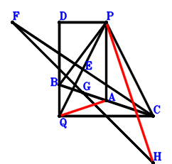
\(\because \) A is the midpoint of BC \(\therefore \small\overrightarrow{CA}=\dfrac{\small\overrightarrow{CB}}{2}\).\(\because \) QC//DP and QC=2DP \(\therefore \small\overrightarrow{CD}=\small\overrightarrow{CP} + \dfrac{\small\overrightarrow{CQ}}{2}\).\(\because \) E is the midpoint of QP \(\therefore \small\overrightarrow{CE}=\dfrac{\small\overrightarrow{CP}}{2} + \dfrac{\small\overrightarrow{CQ}}{2}\).\(\because \) E is the midpoint of FC \(\therefore \small\overrightarrow{CF}=2 \small\overrightarrow{CE}=\small\overrightarrow{CP} + \small\overrightarrow{CQ}\).\(\because \) B, G, C are collinear and GC=3BG \(\therefore \small\overrightarrow{CG}=\dfrac{3 \small\overrightarrow{CB}}{4}\).\(\because \) G is the midpoint of FH \(\therefore \small\overrightarrow{CH}=\dfrac{3 \small\overrightarrow{CB}}{2} - \small\overrightarrow{CF}=\dfrac{3 \small\overrightarrow{CB}}{2} - \small\overrightarrow{CP} - \small\overrightarrow{CQ}\).\(\because \) PA=BP \(\therefore - \small\overrightarrow{BP}^{2} + \small\overrightarrow{PA}^{2}=\left(\small\overrightarrow{CA} - \small\overrightarrow{CP}\right)^{2} - \left(- \small\overrightarrow{CB} + \small\overrightarrow{CP}\right)^{2}=- \left(- \small\overrightarrow{CB} + \small\overrightarrow{CP}\right)^{2} + \left(\dfrac{\small\overrightarrow{CB}}{2} - \small\overrightarrow{CP}\right)^{2}=- \dfrac{3 \small\overrightarrow{CB}^{2}}{4} + \small\overrightarrow{CB} \cdot \small\overrightarrow{CP}=0\) . . . . . . \(①\)\(\because \) QC⊥DB \(\therefore \small\overrightarrow{BD} \cdot \small\overrightarrow{QC}=- \small\overrightarrow{CQ} \cdot \left(- \small\overrightarrow{CB} + \small\overrightarrow{CD}\right)=- \small\overrightarrow{CQ} \cdot \left(- \small\overrightarrow{CB} + \small\overrightarrow{CP} + \dfrac{\small\overrightarrow{CQ}}{2}\right)=\small\overrightarrow{CB} \cdot \small\overrightarrow{CQ} - \small\overrightarrow{CP} \cdot \small\overrightarrow{CQ} - \dfrac{\small\overrightarrow{CQ}^{2}}{2}=0\) . . . . . . \(②\)In conclusion, \(\small\overrightarrow{PH} \cdot \small\overrightarrow{QA}=\left(\small\overrightarrow{CA} - \small\overrightarrow{CQ}\right) \cdot \left(\small\overrightarrow{CH} - \small\overrightarrow{CP}\right)=\left(\dfrac{\small\overrightarrow{CB}}{2} - \small\overrightarrow{CQ}\right) \cdot \left(\dfrac{3 \small\overrightarrow{CB}}{2} - 2 \small\overrightarrow{CP} - \small\overrightarrow{CQ}\right)=\dfrac{3 \small\overrightarrow{CB}^{2}}{4} - \small\overrightarrow{CB} \cdot \small\overrightarrow{CP} - 2 \small\overrightarrow{CB} \cdot \small\overrightarrow{CQ} + 2 \small\overrightarrow{CP} \cdot \small\overrightarrow{CQ} + \small\overrightarrow{CQ}^{2}=-①-2\cdot②=0\), that is, PH⊥QA.
Exercise 23250： Let PIHC be a parallelogram. B, G, C are collinear and GC=3BG. F, A, Q are the midpoints of EQ, BC, BH, respectively. D is the midpoint of EC and QP. AP⊥FG. QA=QC. Prove that IC⊥BP.
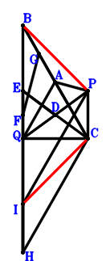
\(\because \) A is the midpoint of BC \(\therefore \small\overrightarrow{CA}=\dfrac{\small\overrightarrow{CB}}{2}\).\(\because \) D is the midpoint of QP \(\therefore \small\overrightarrow{CD}=\dfrac{\small\overrightarrow{CP}}{2} + \dfrac{\small\overrightarrow{CQ}}{2}\).\(\because \) D is the midpoint of EC \(\therefore \small\overrightarrow{CE}=2 \small\overrightarrow{CD}=\small\overrightarrow{CP} + \small\overrightarrow{CQ}\).\(\because \) F is the midpoint of EQ \(\therefore \small\overrightarrow{CF}=\dfrac{\small\overrightarrow{CE}}{2} + \dfrac{\small\overrightarrow{CQ}}{2}=\dfrac{\small\overrightarrow{CP}}{2} + \small\overrightarrow{CQ}\).\(\because \) B, G, C are collinear and GC=3BG \(\therefore \small\overrightarrow{CG}=\dfrac{3 \small\overrightarrow{CB}}{4}\).\(\because \) Q is the midpoint of BH \(\therefore \small\overrightarrow{CH}=- \small\overrightarrow{CB} + 2 \small\overrightarrow{CQ}\).\(\because \) PIHC is a parallelogram \(\therefore \small\overrightarrow{CI}=- \small\overrightarrow{CB} + \small\overrightarrow{CP} + 2 \small\overrightarrow{CQ}\).\(\because \) QA=QC \(\therefore \small\overrightarrow{QA}^{2} - \small\overrightarrow{QC}^{2}=- \small\overrightarrow{CQ}^{2} + \left(\small\overrightarrow{CA} - \small\overrightarrow{CQ}\right)^{2}=- \small\overrightarrow{CQ}^{2} + \left(\dfrac{\small\overrightarrow{CB}}{2} - \small\overrightarrow{CQ}\right)^{2}=\dfrac{\small\overrightarrow{CB}^{2}}{4} - \small\overrightarrow{CB} \cdot \small\overrightarrow{CQ}=0\) . . . . . . \(①\)\(\because \) AP⊥FG \(\therefore \small\overrightarrow{FG} \cdot \small\overrightarrow{PA}=\left(\small\overrightarrow{CA} - \small\overrightarrow{CP}\right) \cdot \left(- \small\overrightarrow{CF} + \small\overrightarrow{CG}\right)=\left(\dfrac{\small\overrightarrow{CB}}{2} - \small\overrightarrow{CP}\right) \cdot \left(\dfrac{3 \small\overrightarrow{CB}}{4} - \dfrac{\small\overrightarrow{CP}}{2} - \small\overrightarrow{CQ}\right)=\dfrac{3 \small\overrightarrow{CB}^{2}}{8} - \small\overrightarrow{CB} \cdot \small\overrightarrow{CP} - \dfrac{\small\overrightarrow{CB} \cdot \small\overrightarrow{CQ}}{2} + \dfrac{\small\overrightarrow{CP}^{2}}{2} + \small\overrightarrow{CP} \cdot \small\overrightarrow{CQ}=0\) . . . . . . \(②\)In conclusion, \(\small\overrightarrow{BP} \cdot \small\overrightarrow{IC}=- \small\overrightarrow{CI} \cdot \left(- \small\overrightarrow{CB} + \small\overrightarrow{CP}\right)=- \left(- \small\overrightarrow{CB} + \small\overrightarrow{CP}\right) \cdot \left(- \small\overrightarrow{CB} + \small\overrightarrow{CP} + 2 \small\overrightarrow{CQ}\right)=- \small\overrightarrow{CB}^{2} + 2 \small\overrightarrow{CB} \cdot \small\overrightarrow{CP} + 2 \small\overrightarrow{CB} \cdot \small\overrightarrow{CQ} - \small\overrightarrow{CP}^{2} - 2 \small\overrightarrow{CP} \cdot \small\overrightarrow{CQ}=-①-2\cdot②=0\), that is, IC⊥BP.
Exercise 24259： Let DQCP, GBQH and PGQA be parallelograms. A is the midpoint of BC. E is the midpoint of FC and DQ. FB⊥BP. QA=QC. Prove that AP⊥HC.
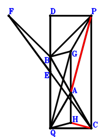
\(\because \) A is the midpoint of BC \(\therefore \small\overrightarrow{CA}=\dfrac{\small\overrightarrow{CB}}{2}\).\(\because \) DQCP is a parallelogram \(\therefore \small\overrightarrow{CD}=\small\overrightarrow{CP} + \small\overrightarrow{CQ}\).\(\because \) E is the midpoint of DQ \(\therefore \small\overrightarrow{CE}=\dfrac{\small\overrightarrow{CD}}{2} + \dfrac{\small\overrightarrow{CQ}}{2}=\dfrac{\small\overrightarrow{CP}}{2} + \small\overrightarrow{CQ}\).\(\because \) E is the midpoint of FC \(\therefore \small\overrightarrow{CF}=2 \small\overrightarrow{CE}=\small\overrightarrow{CP} + 2 \small\overrightarrow{CQ}\).\(\because \) A is the midpoint of BC \(\therefore \small\overrightarrow{CG}=- \small\overrightarrow{CA} + \small\overrightarrow{CP} + \small\overrightarrow{CQ}=- \dfrac{\small\overrightarrow{CB}}{2} + \small\overrightarrow{CP} + \small\overrightarrow{CQ}\).\(\because \) PGQA is a parallelogram \(\therefore \small\overrightarrow{CH}=- \dfrac{3 \small\overrightarrow{CB}}{2} + \small\overrightarrow{CP} + 2 \small\overrightarrow{CQ}\).\(\because \) GBQH is a parallelogram \(\therefore \small\overrightarrow{QA}^{2} - \small\overrightarrow{QC}^{2}=- \small\overrightarrow{CQ}^{2} + \left(\small\overrightarrow{CA} - \small\overrightarrow{CQ}\right)^{2}=- \small\overrightarrow{CQ}^{2} + \left(\dfrac{\small\overrightarrow{CB}}{2} - \small\overrightarrow{CQ}\right)^{2}=\dfrac{\small\overrightarrow{CB}^{2}}{4} - \small\overrightarrow{CB} \cdot \small\overrightarrow{CQ}=0\) . . . . . . \(①\)\(\because \) QA=QC \(\therefore \small\overrightarrow{BP} \cdot \small\overrightarrow{FB}=\left(- \small\overrightarrow{CB} + \small\overrightarrow{CP}\right) \cdot \left(\small\overrightarrow{CB} - \small\overrightarrow{CF}\right)=\left(- \small\overrightarrow{CB} + \small\overrightarrow{CP}\right) \cdot \left(\small\overrightarrow{CB} - \small\overrightarrow{CP} - 2 \small\overrightarrow{CQ}\right)=- \small\overrightarrow{CB}^{2} + 2 \small\overrightarrow{CB} \cdot \small\overrightarrow{CP} + 2 \small\overrightarrow{CB} \cdot \small\overrightarrow{CQ} - \small\overrightarrow{CP}^{2} - 2 \small\overrightarrow{CP} \cdot \small\overrightarrow{CQ}=0\) . . . . . . \(②\)In conclusion, \(\small\overrightarrow{HC} \cdot \small\overrightarrow{PA}=- \small\overrightarrow{CH} \cdot \left(\small\overrightarrow{CA} - \small\overrightarrow{CP}\right)=- \left(\dfrac{\small\overrightarrow{CB}}{2} - \small\overrightarrow{CP}\right) \cdot \left(- \dfrac{3 \small\overrightarrow{CB}}{2} + \small\overrightarrow{CP} + 2 \small\overrightarrow{CQ}\right)=\dfrac{3 \small\overrightarrow{CB}^{2}}{4} - 2 \small\overrightarrow{CB} \cdot \small\overrightarrow{CP} - \small\overrightarrow{CB} \cdot \small\overrightarrow{CQ} + \small\overrightarrow{CP}^{2} + 2 \small\overrightarrow{CP} \cdot \small\overrightarrow{CQ}=-①-②=0\), that is, AP⊥HC.
Exercise 24824： Let DCPA be a parallelogram. H is the midpoint of IG and PQ. E is the midpoint of DB and PF. A is the midpoint of CB and PG. AQ⊥QF. PA=PB. Prove that IB⊥CQ.
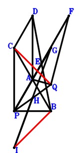
\(\because \) A is the midpoint of CB \(\therefore \small\overrightarrow{BA}=\dfrac{\small\overrightarrow{BC}}{2}\).\(\because \) DCPA is a parallelogram \(\therefore \small\overrightarrow{BD}=\dfrac{3 \small\overrightarrow{BC}}{2} - \small\overrightarrow{BP}\).\(\because \) E is the midpoint of DB \(\therefore \small\overrightarrow{BE}=\dfrac{\small\overrightarrow{BD}}{2}=\dfrac{3 \small\overrightarrow{BC}}{4} - \dfrac{\small\overrightarrow{BP}}{2}\).\(\because \) E is the midpoint of PF \(\therefore \small\overrightarrow{BF}=2 \small\overrightarrow{BE} - \small\overrightarrow{BP}=\dfrac{3 \small\overrightarrow{BC}}{2} - 2 \small\overrightarrow{BP}\).\(\because \) A is the midpoint of PG \(\therefore \small\overrightarrow{BG}=2 \small\overrightarrow{BA} - \small\overrightarrow{BP}=\small\overrightarrow{BC} - \small\overrightarrow{BP}\).\(\because \) H is the midpoint of PQ \(\therefore \small\overrightarrow{BH}=\dfrac{\small\overrightarrow{BP}}{2} + \dfrac{\small\overrightarrow{BQ}}{2}\).\(\because \) H is the midpoint of IG \(\therefore \small\overrightarrow{BI}=- \small\overrightarrow{BG} + \small\overrightarrow{BP} + \small\overrightarrow{BQ}=- \small\overrightarrow{BC} + 2 \small\overrightarrow{BP} + \small\overrightarrow{BQ}\).\(\because \) PA=PB \(\therefore - \small\overrightarrow{BP}^{2} + \small\overrightarrow{PA}^{2}=- \small\overrightarrow{BP}^{2} + \left(\small\overrightarrow{BA} - \small\overrightarrow{BP}\right)^{2}=- \small\overrightarrow{BP}^{2} + \left(\dfrac{\small\overrightarrow{BC}}{2} - \small\overrightarrow{BP}\right)^{2}=\dfrac{\small\overrightarrow{BC}^{2}}{4} - \small\overrightarrow{BC} \cdot \small\overrightarrow{BP}=0\) . . . . . . \(①\)\(\because \) AQ⊥QF \(\therefore \small\overrightarrow{QA} \cdot \small\overrightarrow{QF}=\left(\small\overrightarrow{BA} - \small\overrightarrow{BQ}\right) \cdot \left(\small\overrightarrow{BF} - \small\overrightarrow{BQ}\right)=\left(\dfrac{\small\overrightarrow{BC}}{2} - \small\overrightarrow{BQ}\right) \cdot \left(\dfrac{3 \small\overrightarrow{BC}}{2} - 2 \small\overrightarrow{BP} - \small\overrightarrow{BQ}\right)=\dfrac{3 \small\overrightarrow{BC}^{2}}{4} - \small\overrightarrow{BC} \cdot \small\overrightarrow{BP} - 2 \small\overrightarrow{BC} \cdot \small\overrightarrow{BQ} + 2 \small\overrightarrow{BP} \cdot \small\overrightarrow{BQ} + \small\overrightarrow{BQ}^{2}=0\) . . . . . . \(②\)In conclusion, \(\small\overrightarrow{BI} \cdot \small\overrightarrow{QC}=\small\overrightarrow{BI} \cdot \left(\small\overrightarrow{BC} - \small\overrightarrow{BQ}\right)=\left(\small\overrightarrow{BC} - \small\overrightarrow{BQ}\right) \cdot \left(- \small\overrightarrow{BC} + 2 \small\overrightarrow{BP} + \small\overrightarrow{BQ}\right)=- \small\overrightarrow{BC}^{2} + 2 \small\overrightarrow{BC} \cdot \small\overrightarrow{BP} + 2 \small\overrightarrow{BC} \cdot \small\overrightarrow{BQ} - 2 \small\overrightarrow{BP} \cdot \small\overrightarrow{BQ} - \small\overrightarrow{BQ}^{2}=-①-②=0\), that is, IB⊥CQ.
Exercise 25068： Let BQCD be a parallelogram. EDQC is a trapezoid with CE//QD and CE=2QD. AQCG is a trapezoid with QC//AG and QC=2AG. G, F, A are the midpoints of PH, BE, BC, respectively. AP⊥PF. QA=QC. Prove that QH⊥BP.
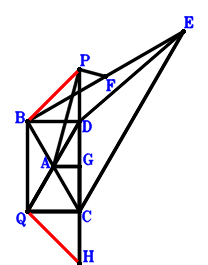
\(\because \) A is the midpoint of BC \(\therefore \small\overrightarrow{CA}=\dfrac{\small\overrightarrow{CB}}{2}\).\(\because \) BQCD is a parallelogram \(\therefore \small\overrightarrow{CD}=\small\overrightarrow{CB} - \small\overrightarrow{CQ}\).\(\because \) CE//QD and CE=2QD \(\therefore \small\overrightarrow{CE}=2 \small\overrightarrow{CD} - 2 \small\overrightarrow{CQ}=2 \small\overrightarrow{CB} - 4 \small\overrightarrow{CQ}\).\(\because \) F is the midpoint of BE \(\therefore \small\overrightarrow{CF}=\dfrac{\small\overrightarrow{CB}}{2} + \dfrac{\small\overrightarrow{CE}}{2}=\dfrac{3 \small\overrightarrow{CB}}{2} - 2 \small\overrightarrow{CQ}\).\(\because \) QC//AG and QC=2AG \(\therefore \small\overrightarrow{CG}=\dfrac{\small\overrightarrow{CB}}{2} - \dfrac{\small\overrightarrow{CQ}}{2}\).\(\because \) G is the midpoint of PH \(\therefore \small\overrightarrow{CH}=2 \small\overrightarrow{CG} - \small\overrightarrow{CP}=\small\overrightarrow{CB} - \small\overrightarrow{CP} - \small\overrightarrow{CQ}\).\(\because \) QA=QC \(\therefore \small\overrightarrow{QA}^{2} - \small\overrightarrow{QC}^{2}=- \small\overrightarrow{CQ}^{2} + \left(\small\overrightarrow{CA} - \small\overrightarrow{CQ}\right)^{2}=- \small\overrightarrow{CQ}^{2} + \left(\dfrac{\small\overrightarrow{CB}}{2} - \small\overrightarrow{CQ}\right)^{2}=\dfrac{\small\overrightarrow{CB}^{2}}{4} - \small\overrightarrow{CB} \cdot \small\overrightarrow{CQ}=0\) . . . . . . \(①\)\(\because \) AP⊥PF \(\therefore \small\overrightarrow{PA} \cdot \small\overrightarrow{PF}=\left(\small\overrightarrow{CA} - \small\overrightarrow{CP}\right) \cdot \left(\small\overrightarrow{CF} - \small\overrightarrow{CP}\right)=\left(\dfrac{\small\overrightarrow{CB}}{2} - \small\overrightarrow{CP}\right) \cdot \left(\dfrac{3 \small\overrightarrow{CB}}{2} - \small\overrightarrow{CP} - 2 \small\overrightarrow{CQ}\right)=\dfrac{3 \small\overrightarrow{CB}^{2}}{4} - 2 \small\overrightarrow{CB} \cdot \small\overrightarrow{CP} - \small\overrightarrow{CB} \cdot \small\overrightarrow{CQ} + \small\overrightarrow{CP}^{2} + 2 \small\overrightarrow{CP} \cdot \small\overrightarrow{CQ}=0\) . . . . . . \(②\)In conclusion, \(\small\overrightarrow{BP} \cdot \small\overrightarrow{QH}=\left(- \small\overrightarrow{CB} + \small\overrightarrow{CP}\right) \cdot \left(\small\overrightarrow{CH} - \small\overrightarrow{CQ}\right)=\left(- \small\overrightarrow{CB} + \small\overrightarrow{CP}\right) \cdot \left(\small\overrightarrow{CB} - \small\overrightarrow{CP} - 2 \small\overrightarrow{CQ}\right)=- \small\overrightarrow{CB}^{2} + 2 \small\overrightarrow{CB} \cdot \small\overrightarrow{CP} + 2 \small\overrightarrow{CB} \cdot \small\overrightarrow{CQ} - \small\overrightarrow{CP}^{2} - 2 \small\overrightarrow{CP} \cdot \small\overrightarrow{CQ}=-①-②=0\), that is, QH⊥BP.
Exercise 25395： Let PDQC be a trapezoid with PC//DQ and PC=2DQ. D, P are the midpoints of EB, GF, respectively. A is the midpoint of BC and QF. EA⊥AP. QA=PB. Prove that GB⊥QC.
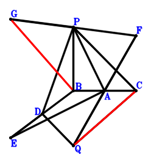
\(\because \) A is the midpoint of BC \(\therefore \small\overrightarrow{BA}=\dfrac{\small\overrightarrow{BC}}{2}\).\(\because \) PC//DQ and PC=2DQ \(\therefore \small\overrightarrow{BD}=- \dfrac{\small\overrightarrow{BC}}{2} + \dfrac{\small\overrightarrow{BP}}{2} + \small\overrightarrow{BQ}\).\(\because \) D is the midpoint of EB \(\therefore \small\overrightarrow{BE}=2 \small\overrightarrow{BD}=- \small\overrightarrow{BC} + \small\overrightarrow{BP} + 2 \small\overrightarrow{BQ}\).\(\because \) A is the midpoint of QF \(\therefore \small\overrightarrow{BF}=2 \small\overrightarrow{BA} - \small\overrightarrow{BQ}=\small\overrightarrow{BC} - \small\overrightarrow{BQ}\).\(\because \) P is the midpoint of GF \(\therefore \small\overrightarrow{BG}=- \small\overrightarrow{BF} + 2 \small\overrightarrow{BP}=- \small\overrightarrow{BC} + 2 \small\overrightarrow{BP} + \small\overrightarrow{BQ}\).\(\because \) QA=PB \(\therefore - \small\overrightarrow{BP}^{2} + \small\overrightarrow{QA}^{2}=- \small\overrightarrow{BP}^{2} + \left(\small\overrightarrow{BA} - \small\overrightarrow{BQ}\right)^{2}=- \small\overrightarrow{BP}^{2} + \left(\dfrac{\small\overrightarrow{BC}}{2} - \small\overrightarrow{BQ}\right)^{2}=\dfrac{\small\overrightarrow{BC}^{2}}{4} - \small\overrightarrow{BC} \cdot \small\overrightarrow{BQ} - \small\overrightarrow{BP}^{2} + \small\overrightarrow{BQ}^{2}=0\) . . . . . . \(①\)\(\because \) EA⊥AP \(\therefore \small\overrightarrow{EA} \cdot \small\overrightarrow{PA}=\left(\small\overrightarrow{BA} - \small\overrightarrow{BE}\right) \cdot \left(\small\overrightarrow{BA} - \small\overrightarrow{BP}\right)=\left(\dfrac{\small\overrightarrow{BC}}{2} - \small\overrightarrow{BP}\right) \cdot \left(\dfrac{3 \small\overrightarrow{BC}}{2} - \small\overrightarrow{BP} - 2 \small\overrightarrow{BQ}\right)=\dfrac{3 \small\overrightarrow{BC}^{2}}{4} - 2 \small\overrightarrow{BC} \cdot \small\overrightarrow{BP} - \small\overrightarrow{BC} \cdot \small\overrightarrow{BQ} + \small\overrightarrow{BP}^{2} + 2 \small\overrightarrow{BP} \cdot \small\overrightarrow{BQ}=0\) . . . . . . \(②\)In conclusion, \(\small\overrightarrow{BG} \cdot \small\overrightarrow{QC}=\small\overrightarrow{BG} \cdot \left(\small\overrightarrow{BC} - \small\overrightarrow{BQ}\right)=\left(\small\overrightarrow{BC} - \small\overrightarrow{BQ}\right) \cdot \left(- \small\overrightarrow{BC} + 2 \small\overrightarrow{BP} + \small\overrightarrow{BQ}\right)=- \small\overrightarrow{BC}^{2} + 2 \small\overrightarrow{BC} \cdot \small\overrightarrow{BP} + 2 \small\overrightarrow{BC} \cdot \small\overrightarrow{BQ} - 2 \small\overrightarrow{BP} \cdot \small\overrightarrow{BQ} - \small\overrightarrow{BQ}^{2}=-①-②=0\), that is, GB⊥QC.
Exercise 25799： Let EDPB, DCPA and QFGB be parallelograms. A, C are the midpoints of CB, FQ, respectively. EQ⊥QA. AP=CQ. Prove that GP⊥PB.
Exercise 26620： Let DPBE and CPBD be parallelograms. FCPB is a trapezoid with FB//CP and FB=2CP. FPBG is a trapezoid with FG//PB and FG=2PB. A, H are the midpoints of CB, CG, respectively. CQ⊥QE. PA=PB. Prove that AQ⊥QH.
Exercise 26835： Let P, A, D be collinear and 2PD=3AD. A, P, B are the midpoints of CB, FE, QE, respectively. AQ⊥QD. PA=PB. Prove that FC⊥CQ.
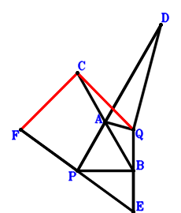
\(\because \) A is the midpoint of CB \(\therefore \small\overrightarrow{BA}=\dfrac{\small\overrightarrow{BC}}{2}\).\(\because \) P, A, D are collinear and 2PD=3AD \(\therefore \small\overrightarrow{BD}=3 \small\overrightarrow{BA} - 2 \small\overrightarrow{BP}=\dfrac{3 \small\overrightarrow{BC}}{2} - 2 \small\overrightarrow{BP}\).\(\because \) B is the midpoint of QE \(\therefore \small\overrightarrow{BE}=- \small\overrightarrow{BQ}\).\(\because \) P is the midpoint of FE \(\therefore \small\overrightarrow{BF}=- \small\overrightarrow{BE} + 2 \small\overrightarrow{BP}=2 \small\overrightarrow{BP} + \small\overrightarrow{BQ}\).\(\because \) PA=PB \(\therefore - \small\overrightarrow{BP}^{2} + \small\overrightarrow{PA}^{2}=- \small\overrightarrow{BP}^{2} + \left(\small\overrightarrow{BA} - \small\overrightarrow{BP}\right)^{2}=- \small\overrightarrow{BP}^{2} + \left(\dfrac{\small\overrightarrow{BC}}{2} - \small\overrightarrow{BP}\right)^{2}=\dfrac{\small\overrightarrow{BC}^{2}}{4} - \small\overrightarrow{BC} \cdot \small\overrightarrow{BP}=0\) . . . . . . \(①\)\(\because \) AQ⊥QD \(\therefore \small\overrightarrow{QA} \cdot \small\overrightarrow{QD}=\left(\small\overrightarrow{BA} - \small\overrightarrow{BQ}\right) \cdot \left(\small\overrightarrow{BD} - \small\overrightarrow{BQ}\right)=\left(\dfrac{\small\overrightarrow{BC}}{2} - \small\overrightarrow{BQ}\right) \cdot \left(\dfrac{3 \small\overrightarrow{BC}}{2} - 2 \small\overrightarrow{BP} - \small\overrightarrow{BQ}\right)=\dfrac{3 \small\overrightarrow{BC}^{2}}{4} - \small\overrightarrow{BC} \cdot \small\overrightarrow{BP} - 2 \small\overrightarrow{BC} \cdot \small\overrightarrow{BQ} + 2 \small\overrightarrow{BP} \cdot \small\overrightarrow{BQ} + \small\overrightarrow{BQ}^{2}=0\) . . . . . . \(②\)In conclusion, \(\small\overrightarrow{CF} \cdot \small\overrightarrow{QC}=\left(- \small\overrightarrow{BC} + \small\overrightarrow{BF}\right) \cdot \left(\small\overrightarrow{BC} - \small\overrightarrow{BQ}\right)=\left(\small\overrightarrow{BC} - \small\overrightarrow{BQ}\right) \cdot \left(- \small\overrightarrow{BC} + 2 \small\overrightarrow{BP} + \small\overrightarrow{BQ}\right)=- \small\overrightarrow{BC}^{2} + 2 \small\overrightarrow{BC} \cdot \small\overrightarrow{BP} + 2 \small\overrightarrow{BC} \cdot \small\overrightarrow{BQ} - 2 \small\overrightarrow{BP} \cdot \small\overrightarrow{BQ} - \small\overrightarrow{BQ}^{2}=-①-②=0\), that is, FC⊥CQ.
Exercise 27181： Let BQCE be a parallelogram. A, G, F, D are the midpoints of BC, EC, AE, QP, respectively. AP⊥DF. QA=QC. Prove that BP⊥DG.
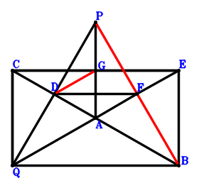
\(\because \) A is the midpoint of BC \(\therefore \small\overrightarrow{CA}=\dfrac{\small\overrightarrow{CB}}{2}\).\(\because \) D is the midpoint of QP \(\therefore \small\overrightarrow{CD}=\dfrac{\small\overrightarrow{CP}}{2} + \dfrac{\small\overrightarrow{CQ}}{2}\).\(\because \) BQCE is a parallelogram \(\therefore \small\overrightarrow{CE}=\small\overrightarrow{CB} - \small\overrightarrow{CQ}\).\(\because \) F is the midpoint of AE \(\therefore \small\overrightarrow{CF}=\dfrac{\small\overrightarrow{CB}}{4} + \dfrac{\small\overrightarrow{CE}}{2}=\dfrac{3 \small\overrightarrow{CB}}{4} - \dfrac{\small\overrightarrow{CQ}}{2}\).\(\because \) G is the midpoint of EC \(\therefore \small\overrightarrow{CG}=\dfrac{\small\overrightarrow{CE}}{2}=\dfrac{\small\overrightarrow{CB}}{2} - \dfrac{\small\overrightarrow{CQ}}{2}\).\(\because \) QA=QC \(\therefore \small\overrightarrow{QA}^{2} - \small\overrightarrow{QC}^{2}=- \small\overrightarrow{CQ}^{2} + \left(\small\overrightarrow{CA} - \small\overrightarrow{CQ}\right)^{2}=- \small\overrightarrow{CQ}^{2} + \left(\dfrac{\small\overrightarrow{CB}}{2} - \small\overrightarrow{CQ}\right)^{2}=\dfrac{\small\overrightarrow{CB}^{2}}{4} - \small\overrightarrow{CB} \cdot \small\overrightarrow{CQ}=0\) . . . . . . \(①\)\(\because \) AP⊥DF \(\therefore \small\overrightarrow{DF} \cdot \small\overrightarrow{PA}=\left(\small\overrightarrow{CA} - \small\overrightarrow{CP}\right) \cdot \left(- \small\overrightarrow{CD} + \small\overrightarrow{CF}\right)=\left(\dfrac{\small\overrightarrow{CB}}{2} - \small\overrightarrow{CP}\right) \cdot \left(\dfrac{3 \small\overrightarrow{CB}}{4} - \dfrac{\small\overrightarrow{CP}}{2} - \small\overrightarrow{CQ}\right)=\dfrac{3 \small\overrightarrow{CB}^{2}}{8} - \small\overrightarrow{CB} \cdot \small\overrightarrow{CP} - \dfrac{\small\overrightarrow{CB} \cdot \small\overrightarrow{CQ}}{2} + \dfrac{\small\overrightarrow{CP}^{2}}{2} + \small\overrightarrow{CP} \cdot \small\overrightarrow{CQ}=0\) . . . . . . \(②\)In conclusion, \(\small\overrightarrow{BP} \cdot \small\overrightarrow{DG}=\left(- \small\overrightarrow{CB} + \small\overrightarrow{CP}\right) \cdot \left(- \small\overrightarrow{CD} + \small\overrightarrow{CG}\right)=\left(- \small\overrightarrow{CB} + \small\overrightarrow{CP}\right) \cdot \left(\dfrac{\small\overrightarrow{CB}}{2} - \dfrac{\small\overrightarrow{CP}}{2} - \small\overrightarrow{CQ}\right)=- \dfrac{\small\overrightarrow{CB}^{2}}{2} + \small\overrightarrow{CB} \cdot \small\overrightarrow{CP} + \small\overrightarrow{CB} \cdot \small\overrightarrow{CQ} - \dfrac{\small\overrightarrow{CP}^{2}}{2} - \small\overrightarrow{CP} \cdot \small\overrightarrow{CQ}=-1/2\cdot①-②=0\), that is, BP⊥DG.
Exercise 27762： Let QDPA be a trapezoid with DQ//PA and DQ=2PA. P is the midpoint of DE. A is the midpoint of EQ and CB. DA⊥AQ. PA=PB. Prove that DB⊥CQ.
Exercise 29778： Let DAPC and DQEP be parallelograms. CFBP is a trapezoid with CP//FB and CP=2FB. F, A are the midpoints of GP, BC, respectively. AP=BP. Given that G, Q, C are collinear and QA//BE, prove that \(BE·QA=GQ·QC\).
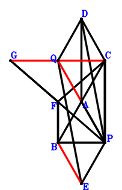
\(\because \) A is the midpoint of BC \(\therefore \small\overrightarrow{PA}=\dfrac{\small\overrightarrow{PB}}{2} + \dfrac{\small\overrightarrow{PC}}{2}\).\(\because \) DAPC is a parallelogram \(\therefore \small\overrightarrow{PD}=\dfrac{\small\overrightarrow{PB}}{2} + \dfrac{3 \small\overrightarrow{PC}}{2}\).\(\because \) DQEP is a parallelogram \(\therefore \small\overrightarrow{PE}=- \small\overrightarrow{PD} + \small\overrightarrow{PQ}=- \dfrac{\small\overrightarrow{PB}}{2} - \dfrac{3 \small\overrightarrow{PC}}{2} + \small\overrightarrow{PQ}\).\(\because \) CP//FB and CP=2FB \(\therefore \small\overrightarrow{PF}=\small\overrightarrow{PB} + \dfrac{\small\overrightarrow{PC}}{2}\).\(\because \) F is the midpoint of GP \(\therefore \small\overrightarrow{PG}=2 \small\overrightarrow{PF}=2 \small\overrightarrow{PB} + \small\overrightarrow{PC}\).\(\because \) AP=BP \( \therefore\small\overrightarrow{PA}^{2} - \small\overrightarrow{PB}^{2}=- \small\overrightarrow{PB}^{2} + \left(\dfrac{\small\overrightarrow{PB}}{2} + \dfrac{\small\overrightarrow{PC}}{2}\right)^{2}=- \dfrac{3 \small\overrightarrow{PB}^{2}}{4} + \dfrac{\small\overrightarrow{PB} \cdot \small\overrightarrow{PC}}{2} + \dfrac{\small\overrightarrow{PC}^{2}}{4}=0.\)In conclusion, \(\small\overrightarrow{EB} \cdot \small\overrightarrow{QA} + \small\overrightarrow{GQ} \cdot \small\overrightarrow{QC}=\left(\small\overrightarrow{PA} - \small\overrightarrow{PQ}\right) \cdot \left(\small\overrightarrow{PB} - \small\overrightarrow{PE}\right) + \left(\small\overrightarrow{PC} - \small\overrightarrow{PQ}\right) \cdot \left(- \small\overrightarrow{PG} + \small\overrightarrow{PQ}\right)=\left(\small\overrightarrow{PC} - \small\overrightarrow{PQ}\right) \cdot \left(- 2 \small\overrightarrow{PB} - \small\overrightarrow{PC} + \small\overrightarrow{PQ}\right) + \left(\dfrac{\small\overrightarrow{PB}}{2} + \dfrac{\small\overrightarrow{PC}}{2} - \small\overrightarrow{PQ}\right) \cdot \left(\dfrac{3 \small\overrightarrow{PB}}{2} + \dfrac{3 \small\overrightarrow{PC}}{2} - \small\overrightarrow{PQ}\right)=\dfrac{3 \small\overrightarrow{PB}^{2}}{4} - \dfrac{\small\overrightarrow{PB} \cdot \small\overrightarrow{PC}}{2} - \dfrac{\small\overrightarrow{PC}^{2}}{4}=0\)\(\because\) G, Q, C are collinear and QA//BE \(\therefore\) \(BE·QA=GQ·QC\).